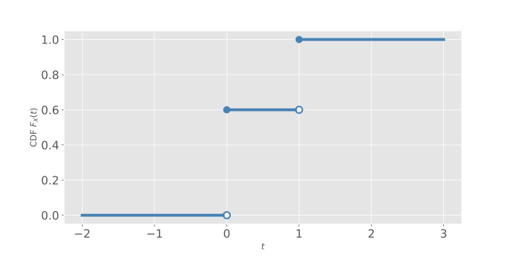
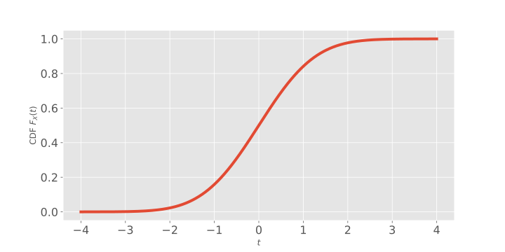
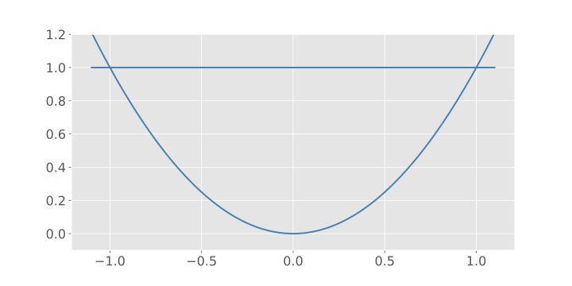
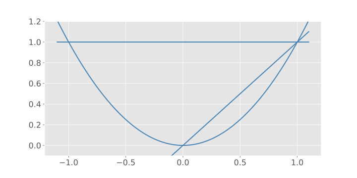
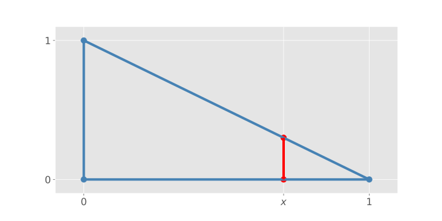

MATH 4100 - Vector Analysis
Jie Zhong
Department of Mathematics
California State University, Los Angeles
Chapter 1 Vector Algebra
1.1 Definitions
What is a vector?
- A vector is a quantity that has both direction and magnitude. It can be visualized as a directed line segment.
- A line segment \(PQ\) is a portion of the line between the points \(P\) and \(Q\)
- A directed line segment is a line segment when the endpoints are given a definite order.
- Two directed line segments are equivalent if they are parallel and have the same length.
Definition (Vector)
- A vector is a collection of equivalent directed line segments. It is denoted by \(\mathbf{A}\) (boldfaced letters), or \(\underline{A}\) or \(\overrightarrow{A}\).
- In Figure 1.1, we see that \(PQ, RS\), and \(TU\) are all equivalent and they represent the same vector.

More Definitions
- The magnitude (or the length, or the norm) \(|\mathbf{A}|\) of a vector \(\mathbf{A}\) is the distance between the initial and terminal points of its (any) equivalent directed line segment.
- If \(P\) and \(Q\) coincide, \(PQ\) is said to be degenerate, and the line segment is just a point. The corresponding vector is called the zero vector.
- Zero vector has zero magnitude and does not have any direction.
- Scalar is just a (real) number.
Example
- Vectors: velocity, position, force, acceleration, etc.
- Scalars: mass, energy, volume, temperature, etc.
1.2 Addition and Subtraction
- The sum \(\mathbf{C} = \mathbf{A} + \mathbf{B}\) has the initial point at the initial point of \(\mathbf{A}\) and the endpoint at the endpoint of \(\mathbf{B}\).
- By definition, if \(\mathbf{A} = \mathbf{A}'\) and \(\mathbf{B} = \mathbf{B}'\), then \[ \mathbf{A} + \mathbf{B} = \mathbf{A}' + \mathbf{B}'. \]
- Commutative: \[ \mathbf{A} + \mathbf{B} = \mathbf{B} + \mathbf{A}. \]
- Associative: \[ (\mathbf{A} + \mathbf{B}) + \mathbf{C} = \mathbf{A} + (\mathbf{B} + \mathbf{C}). \]
- If \(\mathbf{B}\) is a vector, \(-\mathbf{B}\) is defined to be the vector with the same magnitude as \(\mathbf{B}\) but opposite direction.
- Subtraction of vectors: \[ \mathbf{A} - \mathbf{B} = \mathbf{A} + (-\mathbf{B}). \]
- For the zero vector:
- \(\mathbf{0} = - \mathbf{0}\)
- \(\mathbf{A} - \mathbf{A} = \mathbf{0}\)
- \(\mathbf{A} + \mathbf{0} = \mathbf{0} + \mathbf{A} = \mathbf{A}\)
1.3 Multiplication of Vectors by Numbers
- Properties of magnitude:
- \(|\mathbf{A}| \ge 0\)
- \(|\mathbf{A}| = 0\) if and only if \(\mathbf{A} = 0\)
- \(|\mathbf{A}| = |-\mathbf{A}|\), and \(|\mathbf{A} - \mathbf{B}| = |\mathbf{B} - \mathbf{A}|\)
- Triangle inequality: \(| \mathbf{A} + \mathbf{B} | \le | \mathbf{A} | + | \mathbf{B} |\)
- A scalar multiple of \(\mathbf{A}\) by a number \(s\) is defined by \(s \mathbf{A}\): a vector having the magnitude \(s\) times that of \(\mathbf{A}\) and the same direction if \(s>0\) or the opposite direction if \(s<0\).
- Properties of scalar multiplication:
- \(0 \mathbf{A} = \mathbf{0}, 1 \mathbf{A} = \mathbf{A}, (-1) \mathbf{A} = - \mathbf{A}\)
- \((s + t) \mathbf{A} = s \mathbf{A} + t \mathbf{A}\)
- \(s(\mathbf{A} + \mathbf{B}) = s \mathbf{A} + s \mathbf{B}\)
- \(s(t \mathbf{A}) = (st) \mathbf{A}\)
- Unit vector: a vector whose magnitude is \(1\).
- We can create a unit vector in the direction of any given (nonzero) vector \(\mathbf{A}\): \[ \frac{\mathbf{A}}{|\mathbf{A}|}\quad\text{so that}\quad \left|\frac{\mathbf{A}}{|\mathbf{A}|} \right| = \frac{|\mathbf{A}|}{|\mathbf{A}|} = 1. \] This process is called the standardization or normalization of a vector.
1.4 Cartesian Coordinates
- In this section, we consider a cartesian coordinate system in the plan or \(\mathbb{R}^2\) by introducing two mutually perpendicular axes, labeled as \(x\) and \(y\).
- The unit vectors \(\mathbf{i}, \mathbf{j}\) parallel to the \(x\text{-axis}\), \(y\text{-axis}\), respectively, pointing to the positive directions.
- Every vector in the plane can be written uniquely in the form \[ \mathbf{A} = A_1 \mathbf{i} + A_2 \mathbf{j}. \]
- The real numbers \(A_1, A_2\) are called the cartesian components (or orthogonal projections) of \(\mathbf{A}\).
- The magnitude of the vector \(\mathbf{A}\) is \[ \vert\mathbf{A}\vert = \sqrt{A_1^{2} + A_{2}^{2}} \]
- The angles between the vector and the coordinate axes are the direction angles, which can be determined by \[ \cos \alpha_1 = \frac{A_1}{|\mathbf{A}|}, \quad \cos \alpha_2 = \frac{A_2}{|\mathbf{A}|}. \]
1.5 Space Vectors
- All concepts or ideas from Sec 1.4 can be extended to \(\mathbb{R}^3\).
- The unit vectors \(\mathbf{i}, \mathbf{j}, \mathbf{k}\) parallel to the \(x\text{-axis}\), \(y\text{-axis}\), \(z\text{-axis}\) respectively, pointing to the positive directions.
- Every vector in the plane can be written uniquely in the form \[ \mathbf{A} = A_1 \mathbf{i} + A_2 \mathbf{j} + A_3 \mathbf{k}. \]
- The real numbers \(A_1, A_2, A_3\) are called the cartesian components (or orthogonal projections) of \(\mathbf{A}\).
- The magnitude of the vector \(\mathbf{A}\) is \[ \vert\mathbf{A}\vert = \sqrt{A_1^{2} + A_{2}^{2} + A_3^2} \]
- The angles between the vector and the coordinate axes are the direction angles, which can be determined by \[ \cos \alpha = \frac{A_1}{|\mathbf{A}|}, \quad \cos \beta = \frac{A_2}{|\mathbf{A}|}, \quad \cos \gamma = \frac{A_3}{|\mathbf{A}|}. \]
- Pythagorean Theorem \[ \cos^2 \alpha + \cos^2 \beta + \cos^2 \gamma = 1. \]
- Vector addition and scalar multiplication proceeds component-wise:
- \(\mathbf{A} + \mathbf{B} = (A_1 + B_1) \mathbf{i} + (A_2 + B_2) \mathbf{j} + (A_3 + B_3) \mathbf{k}\)
- \(s \mathbf{A} = (s A_1) \mathbf{i} + (s A_2) \mathbf{j} + (s A_3) \mathbf{k}\)
1.6 Types of Vectors
- Position vector of the particle: directed line segment extending from the origin \((0, 0, 0)\) to the point \((x, y, z)\) where the particle is located. \[ \mathbf{R} = x \mathbf{i} + y \mathbf{j} + z \mathbf{k}. \]
- Displacement vector of the particle: directed line segment extending from the initial position \(\mathbf{R}_1 = (x_1, y_1, z_1)\) to its final position \(\mathbf{R}_2 = (x_2, y_2, z_2)\). \[ \mathbf{R}_2 - \mathbf{R}_1 = (x_2 - x_1) \mathbf{i} + (y_2 - y_1) \mathbf{j} + (z_2 - z_1) \mathbf{k}. \]
- The displacement vector is an intrinsic property of the particle, i.e, it does not depend on the choice of the coordinate system.
1.7 Some Problems in Geometry
Example 1.2 If the midpoints of the consecutive sides of a quadrilateral are joined by line segments, is the resulting quadrilateral a parallelogram?
Note: The quadrilateral needs not be a plane figure.
Solution
- Let the sides be made into directed line segments \(\mathbf{A}, \mathbf{B}, \mathbf{C}\), and \(\mathbf{D}\), as shown.
- \(\mathbf{A} + \mathbf{B} + \mathbf{C} + \mathbf{D} = \mathbf{0}\).
- To conclude that \(TUVW\) is a parallelogram, we will show that \(TU\) is parallel to \(-VW\).
We have \[ TU = \frac{1}{2}\mathbf{A} + \frac{1}{2} \mathbf{B} = \frac{1}{2}( \mathbf{A} + \mathbf{B} ), \]
\[ VW = \frac{1}{2}\mathbf{C} + \frac{1}{2} \mathbf{D} = \frac{1}{2}( \mathbf{C} + \mathbf{D} ). \]
- Since \(\mathbf{A} + \mathbf{B} = - \mathbf{C} + \mathbf{D}\), we have \(TU = - VW\) and thus \(TU\) is parallel to \(-VW\).
Example 1.5 Let \(\theta\) denote the angle between two nonzero vectors \(\mathbf{A}\) and \(\mathbf{B}\). Show that \[ \cos \theta = \frac{A_1 B_1 + A_2 B_2 + A_3 B_3}{|\mathbf{A}| |\mathbf{B}|}. \] Note: This is one of the most important identities in vector algebra.
Solution
- Idea of the proof: compare component-wise and geometric derivation of \(|\mathbf{A}- \mathbf{B}|\).
Using components:
\begin{align*} \vert \mathbf{A} - \mathbf{B} \vert^2 & = (A_1 - B_1)^2 + (A_2 - B_2)^2 + (A_3 - B_3)^2 \\ & = \vert \mathbf{A} \vert^2 + \vert \mathbf{B} \vert^2 - 2(A_1 B_1 + A_2 B_2 + A_3 B_3). \end{align*}Using geometry:
\begin{align*} \vert \mathbf{A} - \mathbf{B} \vert^2 & = (|\mathbf{B}| \sin \theta)^2 + (|\mathbf{A}| - |\mathbf{B}| \cos \theta)^2 \\ & = \vert \mathbf{B} \vert^2 (\sin^2 \theta + \cos^2 \theta) + \vert \mathbf{A} \vert^2 - 2 |\mathbf{A}| |\mathbf{B}| \cos \theta\\ & = \vert \mathbf{A} \vert^2 + \vert \mathbf{B} \vert^2 - 2 |\mathbf{A}| |\mathbf{B}| \cos \theta. \end{align*}- Comparing two expressions of \(|\mathbf{A} - \mathbf{B}|^2\), we conclude \[ \vert \mathbf{A} \vert \vert \mathbf{B} \vert \cos \theta = A_1 B_1 + A_2 B_2 + A_3 B_3. \]
Example 1.6 Show that the vectors \(\mathbf{A} = 2 \mathbf{i} - \mathbf{j} + 5 \mathbf{k}\) and \(\mathbf{B} = \mathbf{i} + 7 \mathbf{j} + \mathbf{k}\) are perpendicular to each other.
Solution \[ \cos \theta = \frac{2 - 7 + 5}{\sqrt{30} \sqrt{51}} = 0, \] so \(\theta = 90^\circ\).
1.8 Equations of a Line
- Given a point \(\mathbf{R}_0 = x_0 \mathbf{i}+ y_0 \mathbf{j} + z_0 \mathbf{k}\), and a nonzero vector \(\mathbf{V}= a \mathbf{i} + b \mathbf{j} + c \mathbf{k}\), the parametric equation of the line that passing through \(\mathbf{R}_0\) and parallel to \(\mathbf{V}\) is \[ \mathbf{R} = \mathbf{R}_0 + t \mathbf{V}\quad\text{or}\quad \begin{cases} x & = x_0 + at\\ y & = y_0 + bt\\ z & = z_0 + ct \end{cases}, \] where \(t\) is a parameter that ranges between \(-\infty\) and \(\infty\) (you may think of it as time).
- How to derive the equation?
- Note that \(\mathbf{R}\) and \(\mathbf{R}_0\) are two points on the line, so the vector from \(\mathbf{R}_0\) to \(\mathbf{R}\) should be parallel to the desired line, and thus should be parallel to \(\mathbf{V}\), that is, \[ \mathbf{R} - \mathbf{R}_0 = t \mathbf{V}. \]
- Here, we used the fact that two vectors are parallel to each other if and only if they are scalar multiple of each other.
- Try out some values of \(t\):
- \(t = 0\), then \(\mathbf{R} = \mathbf{R}_0\)
- \(t = 1\), then \(\mathbf{R} = \mathbf{R}_0 + \mathbf{V}\)
- \(t = -1\), then \(\mathbf{R} = \mathbf{R}_0 - \mathbf{V}\)
- Can replace \(t\) by any scalar function of \(t\), as long as the function takes all values between \(-\infty\) and \(\infty\). For example, \[ t/2, -t, ~\text{or} ~ t^3. \]
However, if we write \[ \mathbf{R} = \mathbf{R}_0 + t^2 \mathbf{V}, \] then it represents only “half” of the line.
Or, if we write \[ \mathbf{R} = \mathbf{R}_0 + (\sin t) \mathbf{V}, \] then it represents just the segment of the line between \(\mathbf{R}_0 - \mathbf{V}\) and \(\mathbf{R}_0 + \mathbf{V}\).
Parametric form is not unique.
Alternatively, if we eliminate \(t\) (assuming \(a, b, c\) nonzero), we obtain the non-parametric equation of the line \[ \frac{x - x_0}{a} = \frac{y - y_0}{b} = \frac{z - z_0}{c}. \]
Example 1.8 Find equations of the line passing through \((2, 0, 4)\) and parallel to \(2 \mathbf{i} + \mathbf{j} + 3 \mathbf{k}\), both in the parametric and non-parametric form.
Solution
- The condition that \(\mathbf{R} - \mathbf{R}_0\) is parallel to \(\mathbf{V}\) becomes \[ x - 2 = 2t, \quad y - 0 = 1 t, \quad z - 4 = 3t. \]
- Equivalently, \[ x = 2 + 2t, \quad y = t, \quad z = 4 + 3t. \]
- Non-parametric form: \[ \frac{x - 2}{2} = y = \frac{z - 4}{3}. \]
- Example 1.10
Find a unit vector parallel to the line
\[
x - 2 = 2 y -3 = \frac{- 2z + 1}{2}.
\]
Solution
- By comparing with the general non-parametric form \[ \frac{x - x_0}{a} = \frac{y - y_0}{b} = \frac{z - z_0}{c}, \] we have \[ a = 1, b = \frac{1}{2}, c = -1, \] so a vector parallel to the line is \[ \mathbf{i} + \frac{1}{2} \mathbf{j} - \mathbf{k}. \]
- Normalization: \[ \frac{\mathbf{i} + \frac{1}{2} \mathbf{j} - \mathbf{k}}{|\mathbf{i} + \frac{1}{2} \mathbf{j} - \mathbf{k}|} = \frac{2}{3} \mathbf{i} + \frac{1}{3} \mathbf{j} - \frac{2}{3} \mathbf{k}. \]
1.9 Scalar Products
- Recall the identity: \[ \cos \theta = \frac{A_1 B_1 + A_2 B_2 + A_3 B_3}{|\mathbf{A}| |\mathbf{B}|}, \] or, equivalently, \[ \vert \mathbf{A} \vert \vert \mathbf{B} \vert \cos \theta = A_1 B_1 + A_2 B_2 + A_3 B_3. \]
Scalar product (dot product or inner product) of vectors \(\mathbf{A}\) and \(\mathbf{B}\):
\begin{align*} \mathbf{A}\cdot \mathbf{B} & = \vert \mathbf{A}\vert \vert \mathbf{B} \vert \cos \theta && \textit{geometric form}\\ & = A_1 B_1 + A_2 B_2 + A_3 B_3 && \textit{component form} \end{align*}- We identify \(\mathbf{B}\cos \theta\) as the length of the orthogonal projection of \(\mathbf{B}\) in the direction of \(\mathbf{A}\), with positive sign if \(\theta < \pi /2\) or negative sign if \(\theta > \pi / 2\).
- Geometric interpretation of \(\mathbf{A} \cdot \mathbf{B}\): \[(\text{length of $\mathbf{A}$})(\text{signed component of $\mathbf{B}$ along $\mathbf{A}$})\]
- Two nonzero vectors \(\mathbf{A}, \mathbf{B}\) are orthogonal (or perpendicular), denoted by \(\mathbf{A} \perp \mathbf{B}\), if \[ \mathbf{A} \cdot \mathbf{B} = 0. \]
- \(\mathbf{A} \cdot \mathbf{A} = |\mathbf{A}|^2\).
- Properties of scalar product:
- \(\mathbf{A} \cdot \mathbf{A} \ge 0\)
- \(\mathbf{A} \cdot \mathbf{A} = 0\) if and only if \(\mathbf{A} = \mathbf{0}\)
- \(\mathbf{A} \cdot \mathbf{B} = \mathbf{B} \cdot \mathbf{A}\)
- \((\mathbf{A} + \mathbf{B}) \cdot \mathbf{C} = \mathbf{A} \cdot \mathbf{C} + \mathbf{B} \cdot \mathbf{C}\)
- \((a \mathbf{A})\cdot \mathbf{B} = \mathbf{A} \cdot (a \mathbf{B}) = a(\mathbf{A} \cdot \mathbf{B})\)
- Scalar product in physics: \[ \text{Work} = \mathbf{F} \cdot \mathbf{D}, \] where \(\mathbf{F}\) is a constant force acting through a displacement \(\mathbf{D}\).
Example 1.13 Find the scalar product of \(4 \mathbf{i} - 5 \mathbf{j} - \mathbf{k}\) and \(\mathbf{i} + 2 \mathbf{j} + 3 \mathbf{k}\).
Solution
\[ 4 \cdot 1 + (-5) \cdot 2 + (-1) \cdot 3 = - 9. \]
Example 1.14 Find the angle between the vectors \(\mathbf{A} = 2 \mathbf{i} + 2 \mathbf{j} - \mathbf{k}\) and \(\mathbf{B} = 3 \mathbf{i} + 4 \mathbf{j}\).
Solution
- \(|\mathbf{A}| = 3\) and \(|\mathbf{B}| = 5\).
- \(\mathbf{A} \cdot \mathbf{B} = 14\).
- \(\cos \theta = \mathbf{A} \cdot \mathbf{B} / |\mathbf{A}| |\mathbf{B}| = 14/15\).
- \(\theta = \cos^{-1}(14/ 15)\).
Example 1.16 (A Maximal Principle)
The unit vector \(\mathbf{n}\) making \(\mathbf{D}\cdot \mathbf{n}\) a maximum is the unit vector pointing in the same direction as \(\mathbf{D}\).Why?
- \(\mathbf{D} \cdot \mathbf{n} = |\mathbf{D}||\mathbf{n}| \cos \theta = |\mathbf{D}| \cos \theta\).
- This will be a maximum when \(\cos \theta = 1\), i.e., \(\theta = 0\).
Example 1.17 The scalar product can be used to express components along the axes.
For any vector \(\mathbf{A} = x \mathbf{i} + y \mathbf{j} + z \mathbf{k}\), we have \[ x = \mathbf{A} \cdot \mathbf{i}, y = \mathbf{A} \cdot \mathbf{j}, z = \mathbf{A} \cdot \mathbf{k}, \] and thus \[ \mathbf{A} = (\mathbf{A} \cdot \mathbf{i}) \mathbf{i} + (\mathbf{A} \cdot \mathbf{j}) \mathbf{j} + (\mathbf{A} \cdot \mathbf{k}) \mathbf{k}. \]
Another application of scalar product (parallel and perpendicular decomposition)
Given two vectors \(\mathbf{A}\) and \(\mathbf{B}\), and we would like to decompose \(\mathbf{B}\) as follows: \[ \mathbf{B} = \mathbf{B}_{\|} + \mathbf{B}_\perp, \] where \(\mathbf{B}_{\|}\) is parallel to \(\mathbf{A}\) and \(\mathbf{B}_\perp\) is perpendicular to \(\mathbf{A}\).
By the geometric interpretation of the scalar product,
\begin{align*} & \text{The (signed) length of component of $\mathbf{B}$ along $\mathbf{A}$}\\ = &\vert \mathbf{B}\vert \cos \theta = \frac{\mathbf{B} \cdot \mathbf{A}}{|\mathbf{A}|}. \end{align*}Now we would like to construct a vector of the length above, but in the direction of \(\mathbf{A}\) (so it will be parallel to \(\mathbf{A}\)).
We just simply take the unit vector along \(\mathbf{A}\) and multiply by the length, and we have the following: \[ \mathbf{B}_{\|} = \frac{\mathbf{B}\cdot \mathbf{A}}{|\mathbf{A}|} \frac{\mathbf{A}}{|\mathbf{A}|} = \frac{\mathbf{B}\cdot \mathbf{A}}{\mathbf{A} \cdot \mathbf{A}} \mathbf{A}. \]
- Then we see that \(\mathbf{B}_\perp\) is just the rest of \(\mathbf{B}\): \[ \mathbf{B}_\perp = \mathbf{B} - \mathbf{B}_{\|} = \mathbf{B} - \frac{\mathbf{B}\cdot \mathbf{A}}{\mathbf{A} \cdot \mathbf{A}} \mathbf{A}. \]
- This is also the basic idea of the Gram-Schmidt process to orthogonalize a set of vectors.
Example 1.18 Decompose the vector \(6 \mathbf{i}+2 \mathbf{j} - 2 \mathbf{k}\) into vectors parallel and perpendicular to \(\mathbf{i} + \mathbf{j} + \mathbf{k}\).
Solution
- The parallel vector is \[ \frac{6 + 2 - 2}{1 + 1 + 1}(\mathbf{i} + \mathbf{j} + \mathbf{k}) = 2(\mathbf{i} + \mathbf{j} + \mathbf{k}). \]
- The perpendicular vector is \[ 6 \mathbf{i}+2 \mathbf{j} - 2 \mathbf{k} - 2(\mathbf{i} + \mathbf{j} + \mathbf{k}) = 4 \mathbf{i} - 4 \mathbf{k}. \]
1.10 Equations of a Plane
- Recall that in Section 1.8, we specified a straight line by giving a point \(\mathbf{R}_0\) on the line and a vector \(\mathbf{V}\) parallel to the line: \[ \mathbf{R} - \mathbf{R}_0 = t \mathbf{V}. \]
- Similarly, we specify a plane by giving a point \(\mathbf{R}_0\) in the plane, and two vectors \(\mathbf{A}\) and \(\mathbf{B}\) parallel to the plane: \[ \mathbf{R} - \mathbf{R}_0 = s \mathbf{A} + t \mathbf{B}, \] for \(-\infty < s, t < \infty\).
- The expressions \[ s \mathbf{A} + t \mathbf{B} \] is called a linear combination of \(\mathbf{A}\) and \(\mathbf{B}\), which spans the plane.
- Non-parametric equation of a plane
- Key observation: can use one normal (or perpendicular) vector \(\mathbf{N}\) to the plane, instead of \(\mathbf{A}\) and \(\mathbf{B}\).
- If \(\mathbf{R}\) is the position vector to a point in the plane, then \[ \mathbf{R} - \mathbf{R}_0 \perp \mathbf{N}, \] or equivalently, \[ \mathbf{R} - \mathbf{R}_0 \cdot \mathbf{N} = 0. \]
- Assume that \(\mathbf{N} = a \mathbf{i} + b \mathbf{j} + c \mathbf{k}\), then \[ a(x - x_0) + b(y - y_0) + c(z - z_0) = 0, \] or equivalently, \[ a x + by + cz = d, \] where \(d = a x_0 + b y_0 + c y_0\).
Example 1.20 Find an equation of the plan passing through \((1, 3, -6)\) perpendicular to the vector \(3 \mathbf{i} - 2 \mathbf{j} + 7 \mathbf{k}\).
Solution
- \(3(x -1) -2(y - 3) + 7 (z + 6)=0\), or
- \(3x - 2y + 7 z = -45\).
Example 1.21 Find an equation of the plane passing through \((1, 2, 3)\) perpendicular to the line \[ \frac{x - 1}{4} = \frac{y}{5} = \frac{z + 5}{6}. \]
Solution
- A vector parallel to the given line above can be read off the coefficients in the denominator: \[ 4 \mathbf{i} + 5 \mathbf{j} + 6 \mathbf{k}. \]
- This vector is perpendicular to the desired plane, so \[ 4(x - 1) + 5 (y -2) + 6(z -3) = 0. \]
Example 1.23 Find the angle between the two planes \(3x + 4y = 0\) and \(2x + y - 2z = 5\).
Solution
Key observation:
\begin{align*} & ~\text{The angle between two planes}\\ = & ~\text{The angle between normal vectors to the two planes} \end{align*}- The normal vectors are \[ \mathbf{N}_1 = 3 \mathbf{i} + 4 \mathbf{j}, \quad \mathbf{N}_2 = 2 \mathbf{i} + \mathbf{j} - 2 \mathbf{k}. \]
- The angle is obtained via \[ \cos \theta = \frac{\mathbf{N}_1 \cdot \mathbf{N}_2}{|\mathbf{N}_1| |\mathbf{N}_2|} = \frac{6 + 4}{5 \cdot 3} = \frac{2}{3}. \]
- \(\theta = \cos^{-1}(2/3) \approx 48^\circ\).
Example 1.24 Show that the distance between an arbitrary point \((x_1, y_1, z_1)\) and the plane \(ax + by + cz = d\) is given by \[ \frac{|a x_1 + b y_1 + c z_1 - d|}{(a^2 + b^2 + c^2)^{1/2}}. \]
Solution
- The desired distance is the absolute value of the (signed) length of the component of \(\mathbf{R}_1 - \mathbf{R}_0\) along the normal vector, where \(\mathbf{R}_1\) is the position vector of the point \((x_1, y_1, z_1)\), and \(\mathbf{R}_0\) is the position vector of the point \((x, y, z)\) in the plane.
- Thus, the distance is \[ \frac{|(\mathbf{R}_1 - \mathbf{R}_0) \cdot \mathbf{N}|}{|\mathbf{N}|} = \frac{|\mathbf{R}_1 \cdot \mathbf{N} - d|}{|\mathbf{N}|}. \]
Example 1.25 Find the distance between the parallel planes \(x + y + z = 5\) and \(x + y + z = 10\).
Solution
- We first pick an arbitrary point in the first plane, say \((1, 1, 3)\).
- Then we desired distance is the distance between this point and the second plane: \[ \frac{|1 \cdot 1 + 1 \cdot 1 + 3 \cdot 1 - 10|}{(1^2 + 1^2 + 1^2)^{1/2}} = \frac{|5 - 10|}{\sqrt{3}} = \frac{5\sqrt{3}}{3}. \]
1.11 Orientation
- Right-handed system
- Let \(\mathbf{A}, \mathbf{B}\) and \(\mathbf{C}\) be nonzero vectors, not all parallel to the same plane.
- The vectors \(\mathbf{A}\) and \(\mathbf{B}\) determine a plane passing through the origin.
- The rotation of \(\mathbf{A}\) into \(\mathbf{B}\) will advance a right-handed screw into the general direction of \(\mathbf{C}\).
- The triple \(\{\mathbf{A}, \mathbf{B}, \mathbf{C}\}\) forms a right-handed system.
1.12 Vector Products
Recall that
\begin{align*} \mathbf{A}\cdot \mathbf{B} & = (\text{length of $\mathbf{A}$})(\text{signed component of $\mathbf{B}$ parallel to $\mathbf{A}$})\\ & = |\mathbf{A}| |\mathbf{B}| \cos \theta \end{align*}- In mechanics, \[\mathbf{A}\cdot \mathbf{B} = \text{The work done by a force $\mathbf{B}$ exerted through a displacement $\mathbf{A}$}\]
- The vector product (or cross product) of two nonzero vectors \(\mathbf{A}\) and \(\mathbf{B}\), is defined by \[ \mathbf{A} \times \mathbf{B} = |\mathbf{A}||\mathbf{B}| \sin \theta \mathbf{n}, \] where \(\mathbf{n}\) is the unit vector perpendicular to both \(\mathbf{A}\) and \(\mathbf{B}\) and such that the triple \(\{\mathbf{A}, \mathbf{B}, \mathbf{n}\}\) is a right-handed system.
The magnitude of the vector product
\begin{align*} \vert \mathbf{A}\times \mathbf{B} \vert & = (\text{length of $\mathbf{A}$})(\text{the component of $\mathbf{B}$ perpendicular to $\mathbf{A}$})\\ & = \text{The area of the parallelogram formed by $\mathbf{A}$ and $\mathbf{B}$}. \end{align*}- In physics, \[ \mathbf{A} \times \mathbf{B} = \text{The torque due to the force $\mathbf{B}$ applied at the point $\mathbf{A}$}. \] The torque is the rotational equivalent of linear force and represents the capability to produce the change in the rotational motion of a (rigid) body.
- Note: The direction of the torque \(\mathbf{A} \times \mathbf{B}\) is perpendicular to the plane spanned by \(\mathbf{A}\) and \(\mathbf{B}\).
- Properties of the vector product:
- \(\mathbf{A} \times \mathbf{B} = \mathbf{0}\)
- \(\mathbf{A} \times \mathbf{B} = - \mathbf{B} \times \mathbf{A}\)
- \((\mathbf{A} + \mathbf{B}) \times \mathbf{C} = \mathbf{A} \times \mathbf{C} + \mathbf{B} \times \mathbf{C}\)
- \((a \mathbf{A}) \times \mathbf{B} = \mathbf{A} \times (a \mathbf{B}) = a(\mathbf{A} \times \mathbf{B})\)
- \(\mathbf{A} \times \mathbf{B} = \mathbf{0}\) if and only if one of the vectors are zero or they are parallel.
- In particular, the vector product of orthogonal unit vectors \(\mathbf{i}\) and \(\mathbf{j}\) is
\[
\mathbf{i} \times \mathbf{j} = \mathbf{k}
\]
such that the triple \(\{\mathbf{i}, \mathbf{j}, \mathbf{k}\}\) is a right-handed coordinate system.
- \(\mathbf{j} \times \mathbf{k} = \mathbf{i}\), \(\mathbf{k} \times \mathbf{i} = \mathbf{j}\)
- \(\mathbf{i} \times \mathbf{k} = - \mathbf{j}\), \(\mathbf{j} \times \mathbf{i} = - \mathbf{k}\), \(\mathbf{k} \times \mathbf{j} = - \mathbf{i}\)
- \(\mathbf{i} \times \mathbf{i} = \mathbf{j} \times \mathbf{j} = \mathbf{k} \times \mathbf{k} = \mathbf{0}\)
- Determinant form of vector product
- If \(\mathbf{A} = A_1 \mathbf{i} + A_2 \mathbf{j} + A_3 \mathbf{k}\) and \(\mathbf{B} = B_1 \mathbf{i} + B_2 \mathbf{j} + B_3 \mathbf{k}\), by the distributive property, \[ \mathbf{A} \times \mathbf{B} = (A_2B_3 - A_3B_2) \mathbf{i} + (A_3 B_1 - A_1 B_3) \mathbf{j} + (A_1 B_2 - A_2 B_1) \mathbf{k}. \]
- This is equivalent to the determinant form: \[ \mathbf{A} \times \mathbf{B} = \begin{vmatrix} \mathbf{i} & \mathbf{j} & \mathbf{k}\\ A_1 & A_2 & A_3\\ B_1 & B_2 & B_3 \end{vmatrix} \]
- Digression to matrices and determinants
- We define a \(2\times 2\) matrix to be an array \[\begin{bmatrix} a_{11} & a_{12}\\ a_{21} & a_{22} \end{bmatrix}, \] where \(a_{11}, a_{12}, a_{21}\) and \(a_{22}\) are four scalars.
- The determinant \[\begin{vmatrix} a_{11} & a_{12}\\ a_{21} & a_{22} \end{vmatrix} \triangleq a_{11} a_{22} - a_{12} a_{21}. \]
- Example \[\begin{vmatrix} 1 & 1 \\ 1 & 1 \end{vmatrix} = 1 - 1 = 0 \] \[\begin{vmatrix} 1 & 2 \\ 3 & 4 \end{vmatrix} = 4 - 6 = -2 \]
- A \(3 \times 3\) matrix is an array \[\begin{bmatrix} a_{11} & a_{12} & a_{13}\\ a_{21} & a_{22} & a_{23}\\ a_{31} & a_{32} & a_{33} \end{bmatrix}, \] where, again, each \(a_{ij}\) is a scalar denoting the entry in the array that is the \(i\text{-th}\) row and the \(j\text{-th}\) column.
- We define the determinant of a \(3\times 3\) matrix by the rule \[\begin{vmatrix} a_{11} & a_{12} & a_{13}\\ a_{21} & a_{22} & a_{23}\\ a_{31} & a_{32} & a_{33} \end{vmatrix} \triangleq a_{11} \begin{vmatrix} a_{22} & a_{23}\\ a_{32} & a_{33} \end{vmatrix} - a_{12} \begin{vmatrix} a_{21} & a_{23}\\ a_{31} & a_{33} \end{vmatrix} + a_{13}\begin{vmatrix} a_{21} & a_{22}\\ a_{31} & a_{32} \end{vmatrix}. \]
- In fact, we can expand a \(3 \times 3\) determinant along any row or column using the signs in the following checkerboard pattern: \[\begin{vmatrix} \texttt{+} & \texttt{-} &\texttt{+} \\ \texttt{-}& \texttt{+} & \texttt{-}\\ \texttt{+} & \texttt{-} & \texttt{+} \end{vmatrix} \]
Example
Expand along the first row. \[\begin{vmatrix} 1 & 2 & 3 \\ 4& 5 & 6\\ 7 & 8 & 9 \end{vmatrix} = 1 \begin{vmatrix} 5 & 6 \\ 8 & 9 \end{vmatrix} - 2 \begin{vmatrix} 4 & 6 \\ 7 & 9 \end{vmatrix} + 3 \begin{vmatrix} 4 & 5 \\ 7 & 8 \end{vmatrix} = -3 + 12 - 9 = 0. \]
Expand along the second column. \[\begin{vmatrix} 1 & 2 & 3 \\ 4& 5 & 6\\ 7 & 8 & 9 \end{vmatrix} = - 2 \begin{vmatrix} 4 & 6 \\ 7 & 9 \end{vmatrix} + 5 \begin{vmatrix} 1 & 3 \\ 7 & 9 \end{vmatrix} -8 \begin{vmatrix} 1 & 3 \\ 4 & 6 \end{vmatrix} = 12 - 60 + 48 = 0. \]
- Therefore, \[ \mathbf{A} \times \mathbf{B} = \begin{vmatrix} \mathbf{i} & \mathbf{j} & \mathbf{k}\\ A_1 & A_2 & A_3\\ B_1 & B_2 & B_3 \end{vmatrix} = \begin{vmatrix} A_2 & A_3 \\ B_2 & B_3 \end{vmatrix} \mathbf{i} - \begin{vmatrix} A_1 & A_3 \\ B_1 & B_3 \end{vmatrix} \mathbf{j} + \begin{vmatrix} A_1 & A_2 \\ B_1 & B_2 \end{vmatrix} \mathbf{k}. \]
Example 1.26 Find the vector product \(\mathbf{A} \times \mathbf{B}\) if \(\mathbf{A} = 3 \mathbf{i} + 4 \mathbf{j}\) and \(\mathbf{B} = \mathbf{i} - 2 \mathbf{j} + 5 \mathbf{k}\).
Solution
\[ \mathbf{A} \times \mathbf{B} = \begin{vmatrix} \mathbf{i} & \mathbf{j} & \mathbf{k} \\ 3 & 4 & 0 \\ 1 & -2 & 5 \end{vmatrix} = 20 \mathbf{i} - 15 \mathbf{j} -10 \mathbf{k}. \]
Example 1.27 Find two unit vectors perpendicular to both \(\mathbf{A} = 2 \mathbf{i} + 2 \mathbf{j} - 3 \mathbf{j}\) and \(\mathbf{B} = \mathbf{i} + 3 \mathbf{j} + \mathbf{k}\).
Solution
- \(\mathbf{A} \times \mathbf{B}\) is perpendicular to both \(\mathbf{A}\) and \(\mathbf{B}\), and \[ \mathbf{A} \times \mathbf{B} = \begin{vmatrix} \mathbf{i} & \mathbf{j} & \mathbf{k} \\ 2 & 2 & -3 \\ 1 & 3 & 1 \end{vmatrix} = 11 \mathbf{i} - 5 \mathbf{j} + 4 \mathbf{k}. \]
- The desired unit vector is \[ \frac{\mathbf{A} \times \mathbf{B}}{|\mathbf{A} \times \mathbf{B}|} = \frac{\mathbf{A} \times \mathbf{B}}{9 \sqrt{2}} = \frac{11}{9\sqrt{2}} \mathbf{i} - \frac{5}{9\sqrt{2}} \mathbf{j} + \frac{4}{9\sqrt{2}} \mathbf{k}. \]
- How to find another perpendicular vector? \[ \frac{\mathbf{B} \times \mathbf{A}}{|\mathbf{A} \times \mathbf{B}|} = - \frac{\mathbf{A} \times \mathbf{B}}{|\mathbf{A} \times \mathbf{B}|} = - \frac{11}{9\sqrt{2}} \mathbf{i} + \frac{5}{9\sqrt{2}} \mathbf{j} - \frac{4}{9\sqrt{2}} \mathbf{k}. \]
Example 1.28 Find the area of the parallelogram determined by \(\mathbf{A} = \mathbf{i} + \mathbf{j} - 3 \mathbf{k}\) and \(\mathbf{B} = -6 \mathbf{j} + 5 \mathbf{k}\).
Solution
- \(\mathbf{A} \times \mathbf{B} = \begin{vmatrix} \mathbf{i} & \mathbf{j} & \mathbf{k} \\ 1 & 1 & -3 \\ 0 & -6 & 5 \end{vmatrix} = -13 \mathbf{i} - 5 \mathbf{j} -6 \mathbf{k}\).
- The desired area is \(\mathbf{A} \times \mathbf{B} = \sqrt{13^2 + 5^2 + 6^2} = \sqrt{230}\).
Example 1.29 Find the equation of the line passing through \((3, 2, -4)\) parallel to the line of intersection of th two planes \(x + 3y - 2z =8\) and \(x-3y + z =0\).
Solution
- Recall from Sec 1.8 that the non-parametric equation of the line that passing through a point \((x_0, y_0, z_0)\) and parallel to a nonzero vector \(\mathbf{V} = a \mathbf{i} + b \mathbf{j} + c \mathbf{k}\) is \[ \frac{x - x_0}{a} = \frac{y - y_0}{b} = \frac{z - z_0}{c}. \]
- Now we only need to find a nonzero vector parallel to the line of the intersection of the two planes, which is parallel to the desired line.
- Note that \[ \mathbf{A} = \mathbf{i} + 3 \mathbf{j} - 2 \mathbf{k}, \quad \mathbf{B} = \mathbf{i} - 3 \mathbf{j} + \mathbf{k} \] are the normal vectors to the two planes.
- \(\mathbf{A} \times \mathbf{B}\) is perpendicular to both \(\mathbf{A}\) and \(\mathbf{B}\), and so it is parallel to the two planes. Hence, \(\mathbf{A} \times \mathbf{B}\) is parallel to the line of intersection.
- \(\mathbf{A} \times \mathbf{B} = \begin{vmatrix} \mathbf{i} & \mathbf{j} & \mathbf{k} \\ 1 & 3 & -2 \\ 1 & -3 & 1 \end{vmatrix} = -3 \mathbf{i} - 3 \mathbf{j} -6 \mathbf{k}\).
- The equation of the desired line: \[ \frac{x - 3}{-3} = \frac{y - 2}{-3} = \frac{z + 4}{-6}, \] or, equivalently, \[ x - 3 = y - 2 = \frac{z + 4}{2}. \]
- Angular velocity
- Consider a rigid body rotating about a fixed axis with a constant angular speed \(\omega\). Then the velocity of the particle at the point \(\mathbf{R}\) is \[ \mathbf{v} = \omega \times \mathbf{R}, \] where \(\omega\) is directed along the axis of rotation and with the magnitude \(|\omega| = \omega\).
- The speed (magnitude of the velocity) of the particle is \[ \vert \mathbf{v} \vert = \omega | \mathbf{R} | \sin \theta, \] where \(\theta\) is the angle between \(\mathbf{R}\) and the axis of rotation.
1.13 Triple Scalar Product
- The triple scalar product of three vectors \(\mathbf{A}, \mathbf{B}\) and \(\mathbf{C}\) is defined by \[ [\mathbf{A}, \mathbf{B}, \mathbf{C}] = \mathbf{A} \cdot (\mathbf{B} \times \mathbf{C}). \]
- Determinant form: \[ [\mathbf{A}, \mathbf{B}, \mathbf{C}] = \mathbf{A} \cdot \begin{vmatrix} \mathbf{i} & \mathbf{j} & \mathbf{k} \\ B_1 & B_2 & B_3 \\ C_1 & B_2 & C_3 \end{vmatrix} = \begin{vmatrix} A_1 & A_2 & A_3 \\ B_1 & B_2 & B_3 \\ C_1 & B_2 & C_3 \end{vmatrix}. \]
- In particular, \[ [\mathbf{i}, \mathbf{j}, \mathbf{k}] = 1. \]
- Geometric interpretation of the triple scalar product: the volume of the parallelepiped with coterminal edges \(\mathbf{A}, \mathbf{B}\) and \(\mathbf{C}\) is given, up to sign, by \([\mathbf{A}, \mathbf{B}, \mathbf{C}]\).
- \([\mathbf{A}, \mathbf{B}, \mathbf{C}]\) is positive if and only if \(\{\mathbf{A}, \mathbf{B}, \mathbf{C}\}\) forms a right-handed system.
Example 1.33 Compute \([\mathbf{A}, \mathbf{B}, \mathbf{C}]\) if \(\mathbf{A} = 2 \mathbf{i} + \mathbf{k}, \mathbf{B} = 3 \mathbf{i} + \mathbf{j} + \mathbf{k}\), and \(\mathbf{C} = \mathbf{i} + \mathbf{j} + 4 \mathbf{k}\).
Solution \[ [\mathbf{A}, \mathbf{B}, \mathbf{C}] = \begin{vmatrix} 2 & 0 & 1 \\ 3 & 1 & 1 \\ 1 & 1 & 4 \end{vmatrix} = 8 + 3 - 1 - 2 = 8. \]
- Properties of the triple scalar product:
- \([\mathbf{A}, \mathbf{B}, \mathbf{C}] = [\mathbf{B}, \mathbf{C}, \mathbf{A}] = [\mathbf{C}, \mathbf{A}, \mathbf{B}]= - [\mathbf{B}, \mathbf{A}, \mathbf{C}] = - [\mathbf{C}, \mathbf{B}, \mathbf{A}]= - [\mathbf{A}, \mathbf{C}, \mathbf{B}]\).
- \([\mathbf{A}, \mathbf{B}, \mathbf{C}] = 0\) if and only if three vectors are coplanar, i.e., on the same plane.
- \([\mathbf{A}, \mathbf{B}, \mathbf{C}]\) is linear in each argument. For example, \[ [s \mathbf{A} + \mathbf{B}, \mathbf{C}, \mathbf{D}] = s [\mathbf{A}, \mathbf{C}, \mathbf{D}] + [\mathbf{B}, \mathbf{C}, \mathbf{D}]. \]
- All these properties can be proved by the properties of determinant of matrices.
1.14 Vector Identities
Of the following identities, the first is the most important because the other three can be derived from it fairly easily:
\begin{align} \mathbf{A} \times (\mathbf{B} \times \mathbf{C}) & = (\mathbf{A} \cdot \mathbf{C}) \mathbf{B} - (\mathbf{A} \cdot \mathbf{B})\mathbf{C}\label{eq:1.30}\tag{1.30}\\ (\mathbf{A} \times \mathbf{B}) \times \mathbf{C} & = (\mathbf{A} \cdot \mathbf{C}) \mathbf{B} - (\mathbf{B} \cdot \mathbf{C})\mathbf{A}\label{eq:1.31}\tag{1.31}\\ (\mathbf{A} \times \mathbf{B}) \times (\mathbf{C} \times \mathbf{D}) & = [\mathbf{A}, \mathbf{C}, \mathbf{D}]\mathbf{B} - [\mathbf{B}, \mathbf{C}, \mathbf{D}] \mathbf{A}\label{eq:1.32}\tag{1.32}\\ (\mathbf{A} \times \mathbf{B}) \cdot (\mathbf{C} \times \mathbf{D}) & = (\mathbf{A} \cdot \mathbf{C}) (\mathbf{B} \cdot \mathbf{D}) - (\mathbf{A} \cdot \mathbf{D})(\mathbf{B} \cdot \mathbf{C})\label{eq:1.33}\tag{1.33}. \end{align}- Intuitive interpretation of identity \eqref{eq:1.30}
- \(\mathbf{V} = \mathbf{A} \times (\mathbf{B} \times \mathbf{C})\) (if not the zero vector) must be perpendicular to \(\mathbf{B} \times \mathbf{C}\).
- \(\mathbf{B}\times \mathbf{C}\) is perpendicular to both \(\mathbf{B}\) and \(\mathbf{C}\).
- \(\mathbf{V}\) must be in the plane spanned by \(\mathbf{B}\) and \(\mathbf{C}\), i.e., \[ \mathbf{V} = m \mathbf{B} + n \mathbf{C}, \] for suitable scalars \(m\) and \(n\).
- The fact that \(m = \mathbf{A} \cdot \mathbf{C}\) and \(n = - \mathbf{A} \cdot \mathbf{B}\) is not obvious here, but please read Sec 1.5.
- For identity \eqref{eq:1.31}:
- Note that \[ (\mathbf{A} \times \mathbf{B}) \times \mathbf{C} = - \mathbf{C} \times (\mathbf{A} \times \mathbf{B}). \]
- Then by using identity \eqref{eq:1.30}, we have \[ \texttt{$-$} \mathbf{C} \times (\mathbf{A} \times \mathbf{B}) = - [ (\mathbf{C} \cdot \mathbf{B}) \mathbf{A} - (\mathbf{C} \cdot \mathbf{A}) \mathbf{B}] = (\mathbf{A} \cdot \mathbf{C}) \mathbf{B} - (\mathbf{A} \cdot \mathbf{B})\mathbf{C}. \]
- For identity \eqref{eq:1.32}:
- Let \(\mathbf{U} = \mathbf{C} \times \mathbf{D}\), then by identity \eqref{eq:1.31}, \[ (\mathbf{A} \times \mathbf{B}) \times \mathbf{U} = (\mathbf{A} \cdot \mathbf{U}) \mathbf{B} - (\mathbf{B} \cdot \mathbf{U})\mathbf{A}. \]
- By the definition of the triple scalar product, we have \[ \mathbf{A}\cdot \mathbf{U} = \mathbf{A} \cdot \mathbf{C} \cdot \mathbf{D} = [\mathbf{A}, \mathbf{C}, \mathbf{D}], \quad \mathbf{B}\cdot \mathbf{U} = \mathbf{B} \cdot \mathbf{C} \cdot \mathbf{D} = [\mathbf{B}, \mathbf{C}, \mathbf{D}]. \]
For identity \eqref{eq:1.33}:
\begin{align*} (\mathbf{A} \times \mathbf{B}) \cdot \mathbf{U} & = [\mathbf{A}, \mathbf{B}, \mathbf{U}] = \mathbf{A} \cdot (\mathbf{B} \times \mathbf{U}) = \mathbf{A} \cdot [\mathbf{B} \times (\mathbf{C} \times \mathbf{D})]\\ & = \mathbf{A} \cdot [(\mathbf{B} \cdot \mathbf{D}) \mathbf{C} - (\mathbf{B} \cdot \mathbf{C}) \mathbf{D}]\\ & = (\mathbf{B}\cdot \mathbf{D})(\mathbf{A}\cdot \mathbf{C}) - (\mathbf{B} \cdot \mathbf{C})(\mathbf{A}\cdot \mathbf{D}). \end{align*}
Chapter 1 - Introduction to Probability
1.4. Set Theory
1.5. The Definition of Probability
1.6. Finite Sample Spaces
1.7. Counting Methods
1.8. Combinatorial Methods
Example 1.8.1 (choosing subsets)
Consider the set \(\{a, b, c, d\}\).
How many distinct subsets of size two?
Note: \(\{a, b\} = \{b, a\}\), where the order does not matter!
All subsets of size two: \[ \{a, b\}, \{a, c\}, \{a, d\}, \{b, c\}, \{b, d\}, \{c, d\}, \] and the total is \(6\).
Combination
A selection of items from a set such that the order of the selection does not matter.
In fact, a combination is an unordered sampling without replacement.
Question: How many combinations of \(k\) items selected from a set of \(n\) distinct items are possible?
We call this number “\(n\) choose \(k\)”, denoted by \[ C_{n, k}, \quad\text{or}\quad C^n_k, \quad\text{or}\quad \binom{n}{k} \]
How to find this number \(C_{n,k}\)?
We will use a different way to compute \(P_{n,k}\).
Making an ordered selection of \(k\) items (\(k\text{-permutation}\)) is the same as choosing a combination of \(k\) items and then ordering them.
This is a \(2\text{-step}\) procedure:
So, \[ P_{n, k} = C_{n,k} \cdot k!. \]
Thus, \[ C_{n,k} = \frac{P_{n,k}}{k!} = \frac{n!}{(n-k)! k!}. \]
Example
Select \(5\) of \(30\) students in a class without regard to the order:
\[ C_{30, 5} = \frac{30!}{25!5!} \]
Binomial coefficient
\[ \binom{n}{k} = C_{n,k} = \frac{n!}{(n-k)! k!} \]
Theorem. For any real numbers \(x\) and \(y\), \(n\in \mathbb{N}\), \[ (x + y)^n = \sum_{k=0}^n \binom{n}{k} x^k y^{n-k}. \]
For the case \(n=2\):
\[ (x + y)^n = \sum_{k=0}^n \binom{n}{k} x^k y^{n-k}. \]
Idea of the proof
\[ (x + y)^n = (x + y)(x + y)\cdots (x + y). \]
After expansion, a typical term should look like
\[ \text{const}\times x^k y^j, \quad k + j = n; \quad \text{or}\quad \text{const}\times x^k y^{n-k}. \]
This “const” is the number of copies of each \(x^ky^{n-k}\), which is a combination number selecting \(k\) times of \(x\) out of total number \(n\).
Note:
(1) \(\binom{n}{0} = \binom{n}{n} = 1\).
(2) \(\binom{n}{k} = \binom{n}{n-k}\)
Proof of (2):
The second formula above suggests that choosing \(k\) items from a set of \(n\) distinct items is the same as choosing \((n-k)\) items.
In other words, a combination is in fact a partition of a set into two parts.
Example
Flip a fair coin \(10\) times.
(1) What’s the probability \(p\) of obtaining exactly three heads?
One typical (possible) outcome could be \(H T \dots T\), or \(10\dots 0\).
Thus, the sample space here is
\[ S = \{(i_1, \dots, i_{10}) \mid i_j = 0 ~\text{or}~ 1, j = 1, \dots, 10 \}. \]
Let \(A\) be the event that we obtain exactly three heads when flipping a coin \(10\) times, so
\[ p = \frac{\# A}{\# S} = \frac{\binom{10}{3}}{2^{10}}. \]
Flip a fair coin \(10\) times.
(2) What’s the probability \(p'\) of obtaining three or fewer heads?
Let \(A'\) be the event that we obtain three or fewer heads. Then
\[ \# A' = \binom{10}{0} + \binom{10}{1} + \binom{10}{2} + \binom{10}{3}, \] and so
\[ p' = \frac{\# A'}{\# S} = \frac{\binom{10}{0} + \binom{10}{1} + \binom{10}{2} + \binom{10}{3}}{2^{10}}. \]
Sampling with replacement but unordered
Recall: sampling with replacement but ordered \[ n^k. \]
Example 1.8.4 (Blood types)
The gene for human blood types consists of a pair of alleles chosen from three alleles, called \(A, B\) and \(O\).
\(OA\) is the same as \(AO\): order does not matter.
\(AA, BB, OO\) are valid types: with replacement.
Question: How many genotypes are there for the blood type?
We can simply list all cases: \(AA, BB, OO, AB, BO, AO\), and there are \(6\) in total.
Warning: \(6\) here is not \(C_{3,2} = 3\), nor \(3^2 = 9\).
What if a gene consists of a pair chosen from a set of \(n\) different alleles? How many genotypes?
Case 1: there \(n\) pairs where both alleles are the same.
Case 2: there are \(\binom{n}{2}\) pairs where two alleles are different.
Then the total is
In general, the number of unordered sampling of size \(k\) items with replacement for \(n\) items is \[ \binom{n+k-1}{k}, \qquad \text{see Exercise 19}. \]
When \(k=2\),
\[ \frac{n^{2} + n}{2} = \frac{n(n+1)}{2} = \binom{n+1}{2}. \]
Summary
- Sampling with replacement, order matters.
Example: flip a fair coin \(10\) times, then \(\# S = 2^{10} (n^k)\). - Sampling without replacement, order matters.
Example: pick \(5\) students out of 30 to form a line: \(P_{30, 5}, \quad(P_{n,k})\). - Sampling without replacement, order does not matter.
Example: pick \(5\) students out of \(30\) to form a team/committee: \(C_{30, 5} = \binom{30}{5}\). - Sampling with replacement, order does not matter (tricky). Example 1.8.4, Exercise 19.
Example
Suppose we have a class of \(24\) children. We consider three different scenarios that each involves choosing \(3\) children.
Every day a random child is chosen to lead the class to lunch, without regard to previous choices.
(1) What is the probability that Carlos was chosen on Monday and Wednesday, Aaron on Tuesday?
Let \(A\) denote the event that Carlos was chosen on Monday and Wednesday, Aaron on Tuesday.
There are two ways to count in this problem:
\[ \# S = 24^3,~ \# A = 1\qquad \text{or}\qquad \# S = 24^5, ~ \# A = 24^2, \] but both give you
\[ \mathbb{P}(A) = \frac{1}{24^{3}}. \]
(2) Three children are chosen randomly to be the class president, vice president and treasurer. No student can hold more than one position. What’s the probability that Mary is president, Cory is vice president and Matt is treasurer?
Let \(A'\) be the event that Mary is president, Cory is vice president and Matt is treasurer. Then
\[ \# S = P_{24, 3}, \quad \# A' = 1, \] and
\[ \mathbb{P}(A') = \frac{1}{P_{24,3}}. \]
(3) A team of three children is chosen at random. What’s the probability that Mary is on the team?
Let \(A''\) be the event that Mary is on the team. Then
\[ \# S = \binom{24}{3}, \quad \# A'' = \binom{1}{1} \binom{23}{2}, \]
and \[ \mathbb{P}(A') = \frac{\binom{1}{1} \binom{23}{2}}{\binom{24}{3}}. \]
1.9. Multinomial Coefficients
Recall: Binomial coefficient \[\binom{n}{k} = C_{n, k} = \binom{n}{n-k}\]
Partitions
A combination is a choice of \(k\) items of an \(n\text{-item}\) set, and the order does not matter.
This is the same as partitioning the set into two parts. One part contains \(k\) items, and the other contains the remaining \(n-k\) items.
Now consider partitions into more than two parts.
Example
Suppose that \(20\) members of an organization are to be divided into three committees \(A, B\) and \(C\), in such a way \(A\) and \(B\) each has \(8\) members, \(C\) has \(4\) members. Each member can be assigned to only one committee.
Question: How many ways to assign the members?
\(3\text{-step}\) procedure: in each step we choose the members to one committee.
Partitions - General Case
Given a set of \(n\) distinct items and non-negative integers \(n_{1}, n_{2}, \dots, n_{r}\) with \(n_1 + n_2 + \cdots +n _r = n\).
Question: How many ways can the set be partitioned into \(r\) disjoint subsets with \(n_i\) items in its \(i^{\text{th}}\) subset?
We call this number \[ \binom{n}{n_1, n_{2}, \dots, n_{r}} \]
This is a \(r\text{-step}\) procedure:
Check for \(r=2\): \(n_1 = k, n_2 = n-k\), \[ \binom{n}{k} = \binom{n}{n-k} = \binom{n}{k, n-k} = \frac{n!}{k!(n-k)!} \]
Example
How many arrangements are there of the letters “BANANA”?
Solution (1):
There are \(6\) positions for the \(3\) letters.
Each arrangement is a partition of the set of \(6\) positions into a subset of size \(3\) (the positions that get the letter \(A\)), and subset of size \(2\) (the positions that get the letter \(N\)), and a subset of size \(1\) (the position that gets the letter \(B\)).
For example,
\[ A A A B N N \leftrightarrow \{1, 2, 3\}, \{4\}, \{5, 6\} \]
\[ B A N A N A \leftrightarrow \{2, 4, 6\}, \{1\}, \{3, 5\} \]
Total number of arrangements:
\[ \binom{6}{3,2,1} = \frac{6!}{3!2!1!} = 60. \]
Solution (2):
We first pretend the \(6\) letters are distinct:
\[ B, A_1, A_2, A_3, N_1, N_2. \]
There are \(6!\) ways to arrange them.
But each of \(3!\) ways to arrange \(A\)’s and each of the 2! ways to arrange \(N\)’s correspond to the same arrangement.
For example, \[ B A_1 N_1 A_2 N_2 A_3 \quad\text{and}\quad B A_2 N_1 A_3 N_2 A_{1} \] both spell as \(BANANA\).
So we need to divide it by \(3!2!\), and the total number ways is \[ \frac{6!}{3!2!} = 60 = \binom{6}{3, 2, 1}. \]
Example 1.9.4
A deck of \(52\) cards, containing \(13\) hearts. Suppose cards are shuffled and distributed among \(A, B, C\) and \(D\) four players.
What is the probability that \(A\) gets \(6\) hearts, \(B\) gets \(4\) hearts, \(C\) gets \(2\) hearts, and \(D\) gets \(1\) heart?
Solution (1):
\[ \# S = \binom{52}{13, 13, 13, 13} = \frac{52!}{(13!)^4}. \]
Let \(E\) be the event that \(A\) gets \(6\) hearts, \(B\) gets \(4\) hearts, \(C\) gets \(2\) hearts, and \(D\) gets \(1\) heart, then
\[ \# E = \binom{13}{6, 4, 2, 1} \cdot \binom{39}{7, 9, 11, 12}. \]
Thus, \[ \mathbb{P}(E) = \frac{\# E}{\# S} = \frac{13!}{6!4!2!} \cdot \frac{39!}{7!9!11!12!} \cdot \frac{(13!)^{4}}{52!}. \]
Solution (2):
Consider \(52\) cards are distributed one by one.
So there are \(\# S = \binom{52}{13}\) total number of combinations of positions of \(13\) hearts, and
\[ \# E = \binom{13}{6} \binom{13}{4} \binom{13}{2} \binom{13}{1}. \]
Of course, the probability \(\mathbb{P}(E)\) is the same as before.
1.10. The Probability of a Union of Events
Recall: Inclusion-Exclusion formula
\[ \mathbb{P}(A\cup B) = \mathbb{P}(A) + \mathbb{P}(B) - \mathbb{P}(A \cap B). \]

Theorem
(1) Three events:

(2) General case:
Example 1.10.1 (easy, read by yourself)
Matching Problem
Suppose \(3\) men throw their hats into the center of a room. The hats are mixed up, and then each man randomly selects a hat.
What’s the probability that at least one man selects his own hat?
Want: \(\mathbb{P}(A)\), where \(A\) is the event that at least one man selects his own hat.
What is the sample space \(S\)?
Consider each outcome is a vector of \(3\) members.
For example,
\((1, 2, 3)\) means each man selects his own hat;
\((2, 1, 3)\) means 1st man selects the hat \(2\), 2nd man selects the hat \(1\), and 3rd man selects his own.
Therefore,
\(\# S = 3! = 6\).
What is the event \(A\)?
Denote by \(E_i\) the event that \(i^{\text{th}}\) man selects his own hat, then
\[ A = E_1\cup E_2\cup E_3. \]
To compute \(\mathbb{P}(A)\), we need \(\mathbb{P}(E_{i}), \mathbb{P}(E_{i}\cap E_j)\) and \(\mathbb{P}(E_1\cap E_2\cap E_3)\):
Therefore, \[ \mathbb{P}(A) = \frac{1}{3} \cdot 3 - 3 \cdot \frac{1}{6} + \frac{1}{6} = 1 - \frac{1}{2} + \frac{1}{6} = \frac{2}{3}. \]
Note: see the “hat problem” on page 49 for the general case.
Chapter 2 - Conditional Probability
2.1. The Definition of Conditional Probability
Given an experiment with probability model \((S, \mathbb{P}, \mathcal{F})\).
Suppose we know the outcome belongs to a given event \(B\), such that \(\mathbb{P}(B)>0\).
The probability that the outcome also belongs to the event \(A\) is called the conditional probability of \(A\) given \(B\), and is defined by \[ \mathbb{P}(A|B) = \frac{\mathbb{P}(A\cap B)}{\mathbb{P}(B)}. \]
Intuitively, out of the total probability assigned to elements of \(B\), \(\mathbb{P}(A|B)\) is the fraction assigned to elements that also belongs to \(A\):

Example
A fair six-sided die is rolled twice.
You were told that the sum of two rolls is \(9\). How likely is it that the first roll is \(6\)?
Let \(A\) be the event that the first roll is \(6\), and \(B\) be the event that the sum of two is \(9\).
\[ \mathbb{P}(A) = \frac{6}{36} = \frac{1}{6}. \]
What about \(\mathbb{P}(A|B)\)?
By definition,
\[ B = \{(3, 6), (6, 3), (4, 5), (5, 4)\}, \quad\text{so,}~\# B = 4. \]
\[ A\cap B = \{(6, 3)\}, \quad\text{so,}~\# A = 1. \]
Therefore, \[ \mathbb{P}(A|B) = \frac{1}{4}. \]
Theorem
If we have a simple sample space, then \[ \mathbb{P}(A|B) = \frac{\# (A\cap B)}{\# B}. \]
Example
Toss a fair coin \(5\) times.
What is the probability that there are more heads than tails given that the first toss is heads?
Let \(A\) be the event that there are more heads than tails, and \(B\) be the event that the first toss is heads.
\[ \# B = 1\cdot 2\cdot 2\cdot 2 \cdot 2 = 2^4, \]
and \[ \# (A\cap B) = \binom{4}{2} + \binom{4}{3} + \binom{4}{4} = 11. \]
So \[ \mathbb{P}(A|B) = \frac{\# (A\cap B)}{\# B} = \frac{11}{2^{4}} = \frac{11}{16}. \]
Important Fact
A conditional probability is a probability measure.
Specifically, given a probability model \((S, \mathbb{P}, \mathcal{F})\), an event \(B\) with \(\mathbb{P}(B)>0\), then the set function \(\mathbb{P}(\cdot | B)\) satisfies the probability axioms and consequences, i.e.,
(1) \(\mathbb{P}(A|B) \ge 0\), for all event \(A\).
(2) \(\mathbb{P}(S | B) = 1\).
(3) If \(A_1, A_2, \dots\) is any countable sequence of disjoint events. \[ \mathbb{P}(\cup_i A_i | B) = \sum_i \mathbb{P}(A_i| B). \]
Example
Exercise. 11. \[ \mathbb{P}(A^c|B) = 1 - \mathbb{P}(A|B). \]
Exercise. 12. \[ \mathbb{P}(A\cup B|C) = \mathbb{P}(A|C) + \mathbb{P}(B | C) - \mathbb{P}(A\cap B| C). \]
Multiplication rule for conditional probability
Recall: \[ \mathbb{P}(A|B) = \frac{\mathbb{P}(A\cap B)}{\mathbb{P}(B)}, \quad \mathbb{P}(B|A) = \frac{\mathbb{P}(A\cap B)}{\mathbb{P}(B)}. \]
By reordering the terms, we have
More general version of this rule:
Example
Draw \(3\) cards from a deck of \(52\) cards without replacement. What’s the probability that you draw \(A22\) in that order?
Let \(B\) be the event of interest, and define
So, \(B = A_1 \cap A_2 \cap A_3\), and thus,
Example (Radar detection)
An aircraft is present in a certain area with probability \(0.05\). If an aircraft is present, the radar correctly detects it with probability \(0.99\). If an aircraft is not present, the radar incorrectly registers it with probability \(0.1\).
(1) What’s the probability of a false alarm (no aircraft but radar sees one)?
Let \(A\) be the event that an aircraft is present, and \(B\) be the event that radar sees one.
(2) What’s the probability of a missed detection (that there is an aircraft and radar does not see it)?
Law of total probability
Let \(B_1, B_2, \dots\) be a countable sequence of events that form a partition of the sample space \(S\):
(1) \(B_1, B_2, \dots\) are disjoint, and
(2) \(\cup_{i=1}^{\infty} B_i = S\).
Then for any event \(A\), we have that \(A\cap B_1, A\cap B_2, \dots\) are also disjoint, and
\[ A = \cup_i (A \cap B_i), \]
\[ \mathbb{P}(A) = \sum_i \mathbb{P}(A\cap B_i) = \sum_i \mathbb{P}(A|B_i) \mathbb{P}(B_i). \]

Special case: \(S = B \cup B^c\).
\[ A = (A \cap B)\cup (A \cap B^c), \]
and
Example
There are \(3\) urns. Urn \(1\) has \(3\) red, \(4\) green, and \(5\) blue balls; urn \(2\) has \(3\) red, \(10\) green, and \(1\) blue balls; urn \(3\) has \(3\) red, \(2\) green, and \(2\) blue balls.
Choose one of the urns at random and draw a ball from this urn. What’s the probability that the ball we choose is green?
Let \(A\) be the event of interest.
Partition \(S\) into \(3\) events: \[ B_i = ~\text{the ball chosen is from the $i\text{-th}$ urn}, i = 1, 2, 3. \]
Then we have
\[ S = B_{1} \cup B_2 \cup B_3, \quad B_i\cap B_j = \emptyset, i \neq j, \]
and thus
2.2. Independent Events
Definition
We say two events \(A\) and \(B\) are independent if
\[ \mathbb{P}(A\cap B) = \mathbb{P}(A) \mathbb{P}(B). \]
Note:
(1) \(A\) and \(B\) are disjoint if \[ \mathbb{P}(A\cup B) = \mathbb{P}(A) + \mathbb{P}(B). \]
(2) Suppose \(\mathbb{P}(B)>0\), events \(A\) and \(B\) are independent if \[ \mathbb{P}(A|B) = \mathbb{P}(A). \qquad\text{Why?} \]
Intuition: \(A\) and \(B\) are independent if the occurrence of \(B\) does not affect the occurrence of \(A\).
Example
Flip two fair coins.
Let \(A\) be the event that the first coin is heads, and \(B\) be the event that the second is tails.
By intuition, it seems \(A\) and \(B\) are independent.
Check: if \(\mathbb{P}(A\cap B) = \mathbb{P}(A) \mathbb{P}(B)\) ?
\[ \mathbb{P}(A\cap B) = \frac{1}{4}, \quad \mathbb{P}(A) = \mathbb{P}(B) = \frac{1}{2}. \]
Example
Roll a six-sided die.
\[ \mathbb{P}(\{6\}) = \frac{1}{6}. \]
If you know the outcome is even, would you change the answer to the probability of getting \(6\)?
Let \(A\) be the event of obtaining \(6\), and \(B\) be the event that you get an even number. Then
\[ \mathbb{P}(A|B) = \frac{1}{3} \neq \frac{1}{6} = \mathbb{P}(A). \] So \(A\) and \(B\) are not independent.
Equivalent definitions
The following statements are equivalent:
- \(A\) and \(B\) are independent.
- \(\mathbb{P}(A\cap B) = \mathbb{P}(A) \mathbb{P}(B)\).
- \(\mathbb{P}(A|B) = \mathbb{P}(A)\).
- \(\mathbb{P}(B|A) = \mathbb{P}(B)\).
- \(\mathbb{P}(A|B^c) = \mathbb{P}(A)\).
- \(\mathbb{P}(B|A^c) = \mathbb{P}(B)\).
Definition (for three events)
The events \(A_1, A_2, A_3\) are independent if all of the following conditions hold:
- \(\mathbb{P}(A_1\cap A_2\cap A_3) = \mathbb{P}(A_1)\mathbb{P}(A_2)\mathbb{P}(A_3)\).
- \(\mathbb{P}(A_1\cap A_2) = \mathbb{P}(A_1)\mathbb{P}(A_2)\).
- \(\mathbb{P}(A_1\cap A_3) = \mathbb{P}(A_1)\mathbb{P}(A_3)\).
- \(\mathbb{P}(A_2\cap A_3) = \mathbb{P}(A_2)\mathbb{P}(A_3)\).
Example
Flip a fair coin twice.
\[ S = \{HH, TT, TH, HT\}. \]
Let
Then
\[ \mathbb{P}(A) = \mathbb{P}(B) = \mathbb{P}(C) = \frac{2}{4} = \frac{1}{2}. \]
Are \(A\) and \(B\) independent?
\[ \mathbb{P}(A\cap B) = \frac{1}{4} = \frac{1}{2}\cdot \frac{1}{2} = \mathbb{P}(A)\mathbb{P}(B). \]
However,
\[ \mathbb{P}(A\cap B \cap C) = \mathbb{P}(\{HH\}) = \frac{1}{4}, \] and
\[ \mathbb{P}(A) \mathbb{P}(B) \mathbb{P}(C) = \frac{1}{2}\cdot \frac{1}{2}\cdot\frac{1}{2} = \frac{1}{8}. \]
Therefore, \(A, B\) and \(C\) are not independent.
Read: Example 2.2.5.
Definition (for \(n\) events)
The events \(A_1, A_2, \dots, A_n\) are independent if
\[ \mathbb{P}(\cap_{i\in I} A_i) = \prod_{i\in I} \mathbb{P}(A_i) \] for any index subset \(I\subseteq \{1, 2, \dots, n\}\).
Another equivalent definition
The events \(A_1, A_2, \dots, A_n\) are independent if
\[ \mathbb{P}(\cap_{i\in I} A_i^{\ast}) = \prod_{i\in I} \mathbb{P}(A_i^{\ast}) \] for any subset \(I\subseteq \{1, 2, \dots, n\}\), where \[ A^{\ast}_i = A_i ~\text{or}~ A^c_i. \]
In particular, if \(A\) and \(B\) are independent, then
Example 2.2.5 (Inspecting items)
A machine produces a defective item with probability \(p\), and a non-defective item with probability \(1-p\).
\(6\) items are produced, and randomly selected, inspected. What’s the probability that there are exactly \(2\) items are defective?
Label the items by \(1, 2, 3, 4, 5, 6\), and define
\[ D_j = \{ j\text{-th item is defective} \}. \]
Then \(D_1, D_2, \dots, D_6\) are independent.
A typical desired outcome:
\[ E = D^c_1 \cap D_2 \cap D_3^c \cap D_4^c \cap D_5 \cap D^c_6. \]
Key observation: all desired outcomes have the same probability \(p^2 (1-p)^4\).
Thus, we only need to count the number of such outcomes, which is
\[ \binom{6}{2}. \]
Therefore, \[ \mathbb{P}(\{\text{exactly $2$ defective items}\}) = \binom{6}{2} p^2 (1-p)^4. \]
2.3. Bayes’ Theorem
\[ \text{"conditional probability"} ~+~ \text{"law of total probability"} \]
Version 1
\[ \mathbb{P}(A|B) = \frac{\mathbb{P}(A\cap B)}{\mathbb{P}(B)} = \frac{\mathbb{P}(B|A)\mathbb{P}(A)}{\mathbb{P}(B)}. \]
Bayes’ formula allows you to reverse the order of conditioning.
Version 2
\[ \mathbb{P}(A|B) = \frac{\mathbb{P}(B|A)\mathbb{P}(A)}{\mathbb{P}(B|A)\mathbb{P}(A) + \mathbb{P}(B|A^c)\mathbb{P}(A^c)}. \]
Version 3
Let \(A_1, A_2,\dots\), be a countable partition of \(S\), then
\[ \mathbb{P}(A_k|B) = \frac{\mathbb{P}(B|A_k)\mathbb{P}(A_k)}{\sum_i \mathbb{P}(B|A_i)\mathbb{P}(A_i)} \]
Example (Medical test)
Suppose \(0.1\%\) of the population carries a certain disease. For people with disease, there is a test that correctly gives a positive result \(99.8\%\) of the time. For people without disease, the test correctly gives a negative result \(99.7\%\) of the time.
If one’s test is positive, what is the probability that the person has the disease?
Define
Have:
\[ \mathbb{P}(A), \quad \mathbb{P}(B|A), \quad \mathbb{P}(B^c|A^c). \]
Have: \[ \mathbb{P}(A), \quad \mathbb{P}(B|A), \quad \mathbb{P}(B^c|A^c). \]
Want:
\(\mathbb{P}(A\cap B)\)?
No, but \[ \mathbb{P}(A|B) = \frac{\mathbb{P}(B|A)\mathbb{P}(A)}{\mathbb{P}(B|A)\mathbb{P}(A) + \mathbb{P}(B|A^c)\mathbb{P}(A^c)}. \]
How to compute \(\mathbb{P}(B|A^c)\) ?
\[ \mathbb{P}(B|A^c) = 1 - \mathbb{P}(B^c|A^c) = 0.003 \]
Thus,
\[ \mathbb{P}(A|B) = \frac{0.998\cdot 0.001}{0.998 \cdot 0.001 + 0.003 \cdot 0.999} \approx 24.98\%. \]
Terminology
- \(\mathbb{P}(B|A) = 0.998\): true positive rate
- \(\mathbb{P}(B^c|A) = 0.002\): false negative rate
- \(\mathbb{P}(B^c|A^c) = 0.997\): true negative rate
- \(\mathbb{P}(B|A^c) = 0.003\): false positive rate
In this example, \(\mathbb{P}(A)\) is often called the prior probability, and \(\mathbb{P}(A|B)\) is called the posterior probability.
Example
A grocery store gets eggs from \(3\) different farms.
- \(20\%\) of eggs come from farm \(1\)
- \(30\%\) of eggs come from farm \(2\)
- \(50\%\) of eggs come from farm \(3\)
- \(5\%\) of egg cartons from farm \(1\) contain a cracked egg
- \(3\%\) of egg cartons from farm \(2\) contain a cracked egg
- \(2\%\) of egg cartons from farm \(3\) contain a cracked egg
If you open a carton, and find a cracked egg, what is the probability that the carton came from farm \(3\)?
Define
Want:
\[ \mathbb{P}(A_3|B) = \frac{\mathbb{P}(B|A_3)\mathbb{P}(A_3)}{\mathbb{P}(B)}. \]
Since
\[ \mathbb{P}(A_3|B) = \frac{10}{29}. \]
Chapter 3 - Random Variables and Distributions
3.1. Random Variables and Discrete Distributions
Definition
Given an probability model \((S, \mathbb{P}, \mathcal{F})\), a random variable is a function \(X\) mapping from \(S\) to a set of real numbers:
\[ X : S \mapsto \mathbb{R}. \]
To each possible outcome \(\omega\in S\), \(X\) assigns a real number \(X(\omega)\), which is called an experimental value or a realization of \(X\).
Example
Roll two fair six-sided dice.
Define
Sample space
\[ S = \{ (i, j) \mid 1\le i, j\le 6, i, j \in \mathbb{N} \}, \] and \(\# S = 36\).
Are these functions (mappings) random variables?
Questions: How can we use such notations to express events?
Let’s compute the probability that the outcome from the first die is \(3\).
So,
\[ \mathbb{P}(\{X_1 = 3\}) = \mathbb{P}(X_1 = 3) = \frac{6}{36} = \frac{1}{6}. \]
We can compute other probabilities, like
\[ \mathbb{P}(X_1 = 3, X_2 = 5) = \mathbb{P}(\{X_1 = 3\} \cap \{X_2 = 5\}) = \frac{1}{36}, \]
and
\[ \mathbb{P}(X = 3) = \mathbb{P}(\{(1, 2), (2, 1)\}) = \frac{2}{36}. \]
Notations
- \(\{X = c\} = \{\omega \in S \mid X(\omega) = c\}\).
- \(\{ a \le X \le b \} = \{ \omega \in S \mid a \le X(\omega) \le b\}\).
- \(\{X\in B\} = \{ \omega \in S \mid X(\omega) \in B \}\), \(B\) is a subset of \(\mathbb{R}\).
- \(\{X = a, Y = b\} = \{X = a\} \cap \{ Y = b\}\).
Definition (Probability distribution)
The probability distribution of a random variable \(X\) is a collection of all probabilities of the form \(\mathbb{P}(X\in B)\), for all subset \(B\subseteq \mathbb{R}\), such that \(\{X\in B\} \in \mathcal{F}\).
Two types of random variables
If the range of the random variable \(X\) is at most countable (finite or infinitely countable), we call \(X\) a discrete random variable. Otherwise, we call \(X\) is a continuous random variable.
Definition
Let \(X\) be a discrete random variable. The probability mass function (p.m.f.) \(p_X\) is defined by
\[ p_X(k) = \mathbb{P}(X = k), ~\text{for every real number } k. \]
Theorem
The probability distribution of a discrete random variable is completely determined by its p.m.f.
Proof
For every \(B\subseteq \mathbb{R}\), we have
\[ \{ X \in B\} = \{ X\in B \cap ~\text{Range}(X)\}. \]
Since \(X\) is discrete, \(\text{Range}(X)\) is at most countable, \(B\cap~\text{Range}(X)\) is also at most countable, say \[ B\cap~\text{Range}(X) = \{k_1, \dots, k_n\} ~\text{or}~ \{k_1, \dots, k_n, \dots \}. \]
Therefore,
Example
Roll two fair dice. Let
What are the p.m.f.s of \(X_1\) and \(X\)?
For \(X_1\),
\(\text{Range}(X_1) = \{1, 2, 3, 4, 5, 6\}\), and so \(X_1\) is a discrete random variable.
Obviously, if \(k\notin \text{Range}(X_1)\), \[ p_{X_1} (k) = 0. \]
For example,
\[ p_{X_1}(1.5) = \mathbb{P}(X_1 = 1.5) = 0. \]
So we only need to consider the case that \(k\in \text{Range}(X_1)\):
\[ p_{X_1}(k) = \mathbb{P}(X_1 = k) = \frac{1}{6}. \]
To sum up,
\[ p_{X_1}(k) =\begin{cases} \frac{1}{6}, & k\in \{1, 2, 3, 4, 5, 6\},\\ 0, & k\notin \{1, 2, 3, 4, 5, 6\}. \end{cases} \]
Another way of presenting the probability mass function:
| \(k\) | \(1\) | \(2\) | \(3\) | \(4\) | \(5\) | \(6\) |
|---|---|---|---|---|---|---|
| \(p_{X_1}(k)\) | \(1/6\) | \(1/6\) | \(1/6\) | \(1/6\) | \(1/6\) | \(1/6\) |
What about \(X\)?
| \(k\) | \(2\) | \(3\) | \(4\) | \(5\) | \(6\) | \(7\) | \(8\) | \(9\) | \(10\) | \(11\) | \(12\) |
|---|---|---|---|---|---|---|---|---|---|---|---|
| \(p_{X}(k)\) |
Theorem
(1) \(p_X(k) = 0\) if \(k\notin \text{Range}(X)\).
(2) \(\sum_{k\in \text{Range}(X)} p_X(k) = 1\).
Uniform Distribution on Integers
Let \(m< n\) be two integers. Suppose that the value of a random variable \(X\) is equally likely to be each of the integer \(m, m+1, \dots, n\).
Then we say that \(X\) has the uniform distribution on the integers \(m, m+1, \dots, n\).
Also, the p.m.f. of \(X\)
\[ p_X(k) = \begin{cases} \frac{1}{n-m+1}, &\text{for}~k = m, m+1, \dots, n,\\ 0, &\text{otherwise}. \end{cases} \]
The random variable \(X_1\) in the previous example has the uniform distribution on the integers \(1, 2, \dots, 6\).
Note: Random Variables Can Have the Same Distribution without Being the Same Random Variable.
Bernoulli Distributions.
Flip a coin. Suppose the probability that you get heads is \(p\) (not necessarily to be \(1/2\)), \(p\in [0, 1]\).
Define \(X\) to be the outcome of the experiment:
\[ X(H) = 1, X(T) = 0, \]
and
\[ \text{Range}(X) = \{0, 1\}. \]
So the p.m.f. of \(X\):
| \(k\) | 1 | 0 |
|---|---|---|
| \(p_X(k)\) | \(p\) | \(1-p\) |
Definition
Let \(0\le p\le 1\). A random variable \(X\) has the Bernoulli distribution with the “success” probability \(p\) if \(X\) is \(\{0, 1\}\text{-valued}\) and satisfies \(\mathbb{P}(X=1) = p\) and \(\mathbb{P}(X=0) = 1-p\).
We write \(X\sim \text{Ber}(p)\).
Binomial Distribution
Flip a (possibly biased) coin \(n\) times.
\[ S = \{(i_1, i_2, \dots, i_n\}\mid i_1, i_2, \dots, i_n\in \{0, 1\}\} \]
Let
\[ X_i = i\text{-th outcome}, i = 1, 2, \dots, n. \]
Then
\[ X_i \sim \text{Ber}(p), \]
where
\[ p = \mathbb{P}(\{H\}) = \mathbb{P}(X_i = 1). \]
Now we define
\[ X = X_1 + X_2 + \dots + X_n. \]
So what does \(X\) mean here?
For example,
\[ X((1, 0, \dots, 0)) = 1, X((1, 0, 1, 0, \dots, 0)) = 2. \]
What is the p.m.f. of \(X\)?
First of all, \[ \text{Range}(X) = \{0, 1, \dots, n\}, \] and \[ p_X(k) = 0 \quad \text{if}~ k \notin \text{Range}(X). \]
If \(k\in \text{Range}(X)\),
\[ \{X = k\} = \{\text{we have exactly $k$ times of successes (heads) out of $n$ flips}\} \]
Therefore,
\[ \mathbb{P}(X = k) = \binom{n}{k} p^k (1 - p)^{n-k}. \]
Definition
Let \(0\le p\le 1\). A random variable is \(X\) has the binomial distribution with parameter \(n\) and \(p\) if \[ \mathbb{P}(X = k) = \binom{n}{k} p^k (1 - p)^{n-k}, \] for \(k\in \{0, 1, \dots, n\}\).
We write \(X\sim \text{Bin}(n, p)\).
Note:
\[ \sum_{k=0}^n \binom{n}{k}p^k (1-p)^{n-k} = ( p + (1-p) )^n = 1^n = 1. \]
In particular, if \(p=1/2\), we have
\[ \sum_{k=0}^n \binom{n}{k} = 2^{n}. \]
Example
What is the probability that five rolls of a fair die yield two or three sixes?
Let \(S_5\) be the number of sixes that appear in the five rolls.
Want:
\[ \mathbb{P}(S_5 = 2 ~\text{or}~ S_5 = 3) = \mathbb{P}(S_5 = 2) + \mathbb{P}(S_5 =3). \]
Key: \(S_5 \sim \text{Bin}(5, 1/6)\).
Thus,
3.2. Continuous Distributions
For a continuous random variable, we introduce its probability density function (p.d.f.).
Definition
For a continuous random variable \(X\), if there exists a function \(f_X\), such that
\[ \mathbb{P}(X\in B) = \int_B f_X(x)\, dx, \quad B\subseteq \mathbb{R}, \]
then we call this function \(f_X\) the probability density function of \(X\).
In particular, \(B = [a, b]\),
\[ \mathbb{P}(a\le X \le b) = \int_a^b f_X(x)\, dx. \]
Note:
(1) \(f_{X}(x) \ge 0\).
(2) \(\int_{-\infty}^{\infty} f_X(x)\, dx = \mathbb{P}(-\infty < X < \infty) = 1\).
Example (Uniform Distribution on Intervals)
Choose a real number uniformly at random from the interval \([0, 1]\), so the sample space \(S = [0, 1]\). Assume that \([a, b]\subseteq S\), the probability that the chosen number lies in the interval \([a, b]\) should be equal to the proportion of \(S\) covered by \([a, b]\),
\[ \mathbb{P}([a, b]) = \frac{b-a}{1-0} = b-a. \]
We call the probability model in this example, the uniform distribution on \([0, 1]\), and we write \(X\sim \text{Unif}([0, 1])\).
Example
Let \(X\sim\text{Unif}([0, 1])\).
\[ \mathbb{P}(0.5 \le X\le 0.8) = 0.8 - 0.5 = 0.3. \]
Example
What if we change the sample space \(S\) to \([-1, 1]\)?
Consider \([a, b]\subseteq [-1, 1]\),
\[ \mathbb{P}([a, b]) = \frac{b-a}{1 - (-1)} = \frac{b-a}{2}. \]
In general, we say a random variable \(X\) has a uniform distribution on \([c, d], (d>c)\), if
\[ \mathbb{P}([a, b]) = \frac{b-a}{d-c}, \quad\text{for}~ [a, b]\subseteq [c, d]. \]
Note that \(\text{Range}(X) = [c, d]\), so what is the p.d.f. of \(X\)?
\[ f_X(x) = \begin{cases} \frac{1}{d-c}, &\text{if}~ c\le x\le d;\\ 0, &\text{otherwise}. \end{cases} \]
For example, \([a, b] \subseteq [c, d]\),
\[ \mathbb{P}(a\le X \le b) = \int_a^b f_X(x)\, dx = \int_a^b \frac{1}{d-c} \, dx = \frac{b-a}{d-c}. \]
Other continuous distributions.
Incompletely specified p.d.f.
Suppose \(X\) has the p.d.f. defined by
\[ f_X(x) = \begin{cases} c x, &\text{if}~ 0 < x < 4,\\ 0, &\text{otherwise}. \end{cases} \]
(1) Find \(c\)?
Fact:
\[ \int_{-\infty}^{\infty} f_X(x) \, dx = 1. \]
But,
\[ \int_{-\infty}^{\infty} f_X(x) \, dx = \int_{-\infty}^{0} f_X(x) \, dx + \int_{0}^{4} f_X(x) \, dx + \int_{4}^{\infty} f_X(x) \, dx = \int_{0}^{4} f_X(x) \, dx, \]
and
\[ \int_{0}^{4} f_X(x) \, dx = \int_{0}^{4} c x \, dx = 8c. \]
Therefore,
\[ c = \frac{1}{8}. \]
(2) Compute \(\mathbb{P}(1\le X\le 2)\).
(3) Compute \(\mathbb{P}(-5\le X\le 3)\).
(4) Compute \(\mathbb{P}(-5 \le X\le 5)\).
3.3. The Cumulative Distribution Functions
Example
Suppose the p.d.f of \(X\) is defined by
\[ f_X(x) =\begin{cases} \dfrac{1}{(1+x)^2}, & x>0,\\ 0, & x\le 0. \end{cases} \]
Compute
\[ \mathbb{P}(X \le t),\quad \text{for all}~ t \in \mathbb{R}. \]
If \(t = 3\),
\[ \mathbb{P}(X \le 3) = \frac{3}{1+3} = \frac{3}{4}. \]
If \(t= 2\),
\[ \mathbb{P}(X \le 2) = \frac{2}{3}. \]
Also, we can compute
\[ \mathbb{P}(X > 2) = 1 - \mathbb{P}(X \le 2) = 1 - \frac{2}{3} = \frac{1}{3}, \] and
What if \(t = -1\)?
\[ \mathbb{P}(X \le -1) = \frac{-1}{1 + (-1)} = \frac{-1}{0}? \]
Where went wrong?
Warning:
\[ \mathbb{P}(X \le t) = \frac{t}{1+t}, \quad \text{only when} ~t \ge 0! \]
If \(t<0\), we have
\[ \mathbb{P}(X \le t) = 0. \]
To sum up,
\[ \mathbb{P}(X \le t) = \begin{cases} \frac{t}{1+t}, & t\ge 0,\\ 0, & t<0. \end{cases} \]
Definition
Let \(X\) be a random variable. The cumulative distribution function (CDF) of \(X\) is defined by
\[ F_X(t) = \mathbb{P}(X \le t), \quad t\in \mathbb{R}. \]
Note: CDF can be defined for both discrete and continuous random variables.
Example
What is the CDF of a Bernoulli random variable?
Suppose \(X\sim \text{Ber}(p)\), i.e., \(p_X(1) = p, p_X(0)=1-p\).
Want: \(F_{X}(t) = \mathbb{P}(X \le t)\) for all \(t \in \mathbb{R}\).
Let’s just try out some values of \(t\).
\[ F_X(0) = \mathbb{P}(X \le 0) = p_X(0) = \mathbb{P}(X =0) = 1 - p. \]
\[ F_X(0.5) = \mathbb{P}(X \le 0.5) = p_X(0) = 1 - p. \]
\[ F_X(-1) = \mathbb{P}( X \le -1 ) = 0. \]
\[ F_X(5) = \mathbb{P}(X \le 5) = p_X(0) + p_X(1) = 1 - p + p = 1. \]
To sum up,
\[ F_X(t) = \begin{cases} 1, & t \ge 1,\\ 1 - p , & 0 \le t < 1, \\ 0, & t < 0. \end{cases} \]
The following is the plot of the CDF of Ber\((p)\).

Properties of CDF
(1) \(F\) is non-decreasing: if \(s < t\), \(F(s) \le F(t)\).
(2) \(\lim_{t \to -\infty} F(t) = \lim_{t \to -\infty} \mathbb{P}(X \le t) = 0\).
(3) \(0 \le F(t) \le 1\).
(4) \(F\) is right-continuous.
If \(X\) is discrete with p.m.f. \(p_X\), then
\[ F_X(t) = \mathbb{P}(X \le t) = \sum_{k \le t} p_X(k). \]
The graph of \(F\) is a non-decreasing right-continuous staircase.

If \(X\) is continuous with p.d.f. \(f_X(x)\), then
\[ F_X(t) = \mathbb{P}(X \le t) = \int_{-\infty}^t f_X(x) \, dx. \]
\[ F'_X(t) = f_X(t). \]
The graph of \(F_X\) is non-decreasing and continuous.

Theorem
For \(t \in \mathbb{R}\),
(1) \(\mathbb{P}(X > t) = 1 - \mathbb{P}(X \le t) = 1 - F_X(t)\).
(2) \(\mathbb{P}(s < X \le t) = \mathbb{P}(X \le t) - \mathbb{P}(X \le s) = F_X(t) - F_X(s)\).
(3) \(\mathbb{P}(X < t) = \lim_{s \to t - } \mathbb{P}(X \le s) = F_X(t-)\).
(4) \(\mathbb{P}(X = t) = \mathbb{P}(X \le t) - \mathbb{P}(X < t) = F_X(t) - F_X(t-)\).
In particular, if \(F_X\) is continuous,
\[ \mathbb{P}(X = t) = 0, \]
which can also be derived by the fact that
\[ \int_t^t f_X(x) \, dx = 0. \]
Note:
\[ X~ \text{is continuous} \Rightarrow F_X~ \text{is continuous} \]
Warning:
\[ \mathbb{P}(A) = 0 \nRightarrow A = \emptyset. \]
For example, Let \(A\) be the event that you pick \(0.4\) uniformly from \([0, 1]\), then \(\mathbb{P}(A) = 0\), but \(A \neq \emptyset\).
3.4. Bivariate Distributions
Definition
Let \(X\) and \(Y\) be two random variables. The bivariate (or joint) distributions of \(X\) and \(Y\) is the collection of all probabilities of the form \(\mathbb{P}((X, Y) \in C)\) for all sets \(C\) of pair of real numbers such that
\[ \{ (X, Y) \in C\} = \{ \omega \in S \mid ((X(\omega), Y(\omega)) \in C\}, \]
where \(C \in \mathbb{R}^2 = \mathbb{R}\times \mathbb{R}\).
Discrete Joint Distributions
Theorem. If \(X\) and \(Y\) are both discrete, then \((X, Y)\) has a discrete joint distribution.
Joint Probability Mass Function
Recall: p.m.f. of \(X\)
\[ p_X(k) = \mathbb{P}(X = k). \]
For \((X, Y)\), we define
\[ p_{X, Y}(k, l) = \mathbb{P}(X = k, Y = l), \quad \text{for all}~ k, l \in \mathbb{R}. \]
Facts:
(1) \(p_{X, Y}(k, l) = 0\) if either \(k \notin \text{Range}(X)\) or \(l \notin \text{Range}(Y)\).
(2) \(\sum_{k, l} p_{X, Y}(k, l) = 1\).
Example
Roll 2 fair four sided dice.
Let \(U\) be the outcome of the first die and \(V\) be the outcome of the second die. Then
\[ \text{Range}(U) = \text{Range}(V) = \{1, 2, 3, 4\}. \]
The joint p.m.f. of \((U, V)\) is
\[ p_{U, V}(k, l) = \mathbb{P}(U = k, V = l) = \begin{cases} \frac{1}{16}, & k, l \in \{1, 2, 3, 4\},\\ 0, & \text{otherwise}. \end{cases} \]
We can also use a two way table to present the joint p.m.f. as follows:
| \(1\) | \(2\) | \(3\) | \(4\) | |
|---|---|---|---|---|
| \(1\) | \(1/16\) | \(1/16\) | \(1/16\) | \(1/16\) |
| \(2\) | \(1/16\) | \(1/16\) | \(1/16\) | \(1/16\) |
| \(3\) | \(1/16\) | \(1/16\) | \(1/16\) | \(1/16\) |
| \(4\) | \(1/16\) | \(1/16\) | \(1/16\) | \(1/16\) |
Now define
For example,
\[ U = 2, V = 4 \Rightarrow X = 2, Y = 2, \]
and
\[ U = 3, V = 1 \Rightarrow X = 1, Y = 2. \]
Note that
What is the joint p.m.f. of \((X, Y)\)?
For example,
\[ p_{X, Y}(3, 0) = \mathbb{P}(X = 3, Y = 0) = \mathbb{P}(U = 3, V = 3) = \frac{1}{16}, \]
and
However,
\[ p_{X, Y}(2, 3) = \mathbb{P}(X = 2, Y = 3) = 0. \]
(1) For \(k \in \{1, 2, 3, 4\}, l = 0\):
\[ p_{X, Y}(k, 0) = \mathbb{P}(X = k, Y = 0) = \mathbb{P}(U = k, V = k) = \frac{1}{16}. \]
(2) For \(k\in \{1, 2, 3, 4\}, l \in \{1, 2, 3\}\):
Therefore, we have the following table:
| \(0\) | \(1\) | \(2\) | \(3\) | |
|---|---|---|---|---|
| \(1\) | \(1/16\) | \(1/8\) | \(1/8\) | \(1/8\) |
| \(2\) | \(1/16\) | \(1/8\) | \(1/8\) | \(0\) |
| \(3\) | \(1/16\) | \(1/8\) | \(0\) | \(0\) |
| \(4\) | \(1/16\) | \(0\) | \(0\) | \(0\) |
Now we can even compute:
\[ \mathbb{P}(X \le 2, Y \le 1) = \frac{1}{16} + \frac{1}{8} +\frac{1}{16} + \frac{1}{8} = \frac{3}{8}. \]
Continuous Joint Distributions
Definition Two random variables \(X\) and \(Y\) have a continuous joint distribution if there exists a non-negative function \(f\) such that
\[ \mathbb{P}((X, Y) \in C) = \iint_C f(x, y) \, dx dy. \]
Here, \(f(x, y)\) is called the joint p.d.f. of \(X\) and \(Y\).
Note:
(1) \(f(x, y) \ge 0, \forall x, y \in \mathbb{R}\).
(2) \(\int_{-\infty}^\infty \int_{-\infty}^\infty f(x, y) \, dx dy = 1\).
Example 3.4.7
Suppose that the joint p.d.f. of \(X\) and \(Y\) is
\[ f(x, y) = \begin{cases} c x^2y, & x^2 \le y \le 1,\\ 0, & \text{otherwise}. \end{cases} \]
(1) Find \(c\)?

so \(c = 21/4\).
(2) Compute \(\mathbb{P}(X \ge Y)\).
Recall that
\[ \mathbb{P}((X, Y) \in C) = \iint_C f(x, y) \, dx dy. \]
Thus,

Bivariate CDF
Definition. Given two random variables \(X\) and \(Y\), then the joint CDF of \((X, Y)\) is
\[ F_{X, Y}(x, y) = F(x, y) = \mathbb{P}(X \le x, Y \le y). \]
Example
Suppose \(a < b, c < d\).
Express \(\mathbb{P}(a < X \le b, c < Y \le d)\) in terms of \(F_{X, Y}\).
Recall that
Recall that if \(X\) is continuous with p.d.f. \(f(x)\), then
\[\begin{cases} F(x) & = \mathbb{P}(X \le x) = \int_{-\infty}^x f(t) \, dt, \\ F'(x) &= f(x). \end{cases} \]
If \(X, Y\) are continuous, then
\[ F(x, y) = \mathbb{P}(X \le x, Y \le y) = \int_{-\infty}^y \int_{-\infty}^x f(u, v)\, du dv, \]
and
\[ f(x, y) = \frac{\partial^2 F(x, y)}{\partial x \partial y}. \]
Example
Suppose the joint CDF of \((X, Y)\) is
\[ F(x, y) = \begin{cases} \frac{1}{16} x y (x + y), & 0\le x \le 2, 0 \le y \le 2,\\ 0, & \text{otherwise}. \end{cases} \]
Find \(f(x, y)\).
Then
3.5. Marginal Distributions
Theorem
(1) If \(X\) and \(Y\) are discrete random variables, then the p.m.f. of \(X\) and \(Y\) are obtained from the joint p.m.f. of \((X, Y)\) by
Idea of the proof: law of total probability.
\[ \mathbb{P}(A) = \sum_{k=1}^{\infty} \mathbb{P}(A \cap B_{k}). \]
(2) If \(X\) and \(Y\) are continuous random variables, then the p.d.f.s of \(X\) and \(Y\) are obtained from the joint p.d.f. of \((X, Y)\) by
Example (Deriving Marginal p.m.f. from Joint p.m.f.)
Recall
| \(0\) | \(1\) | \(2\) | \(3\) | |
|---|---|---|---|---|
| \(1\) | \(1/16\) | \(1/8\) | \(1/8\) | \(1/8\) |
| \(2\) | \(1/16\) | \(1/8\) | \(1/8\) | \(0\) |
| \(3\) | \(1/16\) | \(1/8\) | \(0\) | \(0\) |
| \(4\) | \(1/16\) | \(0\) | \(0\) | \(0\) |
\[ \mathbb{P}(Y = 2) = \frac{1}{8} + \frac{1}{8} + 0 + 0 = \frac{1}{4}. \]
Example (Deriving Marginal p.d.f. from Joint p.d.f.)
Recall
\[ f(x, y) = \begin{cases} \frac{21}{4} x^2y, & x^2 \le y \le 1,\\ 0, & \text{otherwise}. \end{cases} \]
What is \(f_X(x)\, (f_Y(y))\)?
Independent Random Variables
Recall: Events \(A\) and \(B\) are independent, if
\[ \mathbb{P}(A \cap B) = \mathbb{P}(A) \mathbb{P}(B). \]
Definition
We say random variables \(X\) and \(Y\) are independent, if
\[ \mathbb{P}(X \in A , Y \in B) = \mathbb{P}(X \in A) \mathbb{P}(Y \in B) \]
for all \(A, B \subseteq \mathbb{R}\).
In particular, if \(A = (-\infty, x], B = (-\infty, y]\), then
\[ X ~\text{and}~ Y ~\text{are independent}~ \Rightarrow \mathbb{P}(X \le x, Y \le y) = \mathbb{P}(X \le x) \mathbb{P}(Y \le y). \]
Theorem
(1) \(X\) and \(Y\) are independent if and only if
\[ F_{X, Y}(x, y) = F_X(x) F_Y(y) \quad \forall x, y \in \mathbb{R}. \]
(2) \(X\) and \(Y\) are independent if and only if the following factorization is satisfied:
Continuous case: \[f_{X, Y}(x, y) = f_1(x) f_2(y), \, \forall x, y \in \mathbb{R}.\]
Discrete case: \[p_{X, Y}(k, l) = p_X(k) p_Y(l), \, \forall k, l \in \mathbb{R}.\]
Example
Flip a fair coin twice.
Let \(X\) be the outcome of the first flip, and \(Y\) be the second. Then we have
| \(0\) | \(1\) | |
|---|---|---|
| \(0\) | \(1/4\) | \(1/4\) |
| \(1\) | \(1/4\) | \(1/4\) |
It is easy to check that
\[ p_{X, Y}(k, l) = p_X(k) p_Y(l), \, \forall k, l. \]
So \(X\) and \(Y\) are independent.
Example
| \(0\) | \(1\) | \(2\) | \(3\) | |
|---|---|---|---|---|
| \(1\) | \(1/16\) | \(1/8\) | \(1/8\) | \(1/8\) |
| \(2\) | \(1/16\) | \(1/8\) | \(1/8\) | \(0\) |
| \(3\) | \(1/16\) | \(1/8\) | \(0\) | \(0\) |
| \(4\) | \(1/16\) | \(0\) | \(0\) | \(0\) |
Are \(X\) and \(Y\) independent?
No!
For example, \(p_X(1) = 7/16, p_Y(0) = 1/4\), but \(p_{X, Y}(1, 0) = 1/16\), and
\[ p_{X, Y}(1, 0) \neq p_X(1) p_Y(0). \]
Example
Let \((X, Y) \sim \text{Unif}(A)\), where \(A = [a, b]\times [c, d]\), i.e.,
\[ f(x, y) = \begin{cases} \frac{1}{\text{area}(A)} = \frac{1}{(b-a)(d-c)}, & (x, y) \le A,\\ 0, & \text{otherwise}. \end{cases} \]
Are \(X\) and \(Y\) independent?
Check: \(f(x, y) = f_1(x) f_2(y)\) ?
First, we need to calculate the marginal p.d.f.s.

Similarly, we have
\[ f_Y(y) = \begin{cases} \frac{1}{d- c}, & c \le y \le d,\\ 0, & y < c ~\text{or}~ y > d. \end{cases} \]
So,
\[ f_{X, Y}( x, y ) = f_X(x) f_Y(y), \]
and thus \(X\) and \(Y\) are independent.
Example
Let \((X, Y) \sim \text{Unif}(A)\), where \(A\) is a triangle with vertices \((0, 0), (0, 1)\) and \((1, 0)\).
The joint p.d.f. of \((X, Y)\) is:
\[ f(x, y) = \begin{cases} \frac{1}{\text{area}(A)} = 2, & (x, y) \in A,\\ 0, & \text{otherwise}. \end{cases} \]
Are \(X\) and \(Y\) independent?

Similarly,
\[ f_Y(y) = \begin{cases} 2(1 - y), & 0 \le y \le 1,\\ 0, & y < 0 ~\text{or}~ y > 1. \end{cases} \]
Thus,
Therefore, \(X\) and \(Y\) are not independent.
3.6. Conditional Distributions
Definition
Recall
\[ \mathbb{P}(A | B) = \frac{\mathbb{P}(A \cap B)}{\mathbb{P}(B)}. \]
Let \(X\) and \(Y\) be two discrete random variables, then
is called the conditional p.m.f. of \(X\) and \(Y\).
Example
| \(0\) | \(1\) | |
|---|---|---|
| \(0\) | \(3/10\) | \(2/10\) |
| \(1\) | \(1/10\) | \(4/10\) |
From the table, we have \(X \sim \text{Ber}(1/2)\), and \(Y \sim \text{Ber}(3/5)\).
What is the conditional p.m.f. of \(X\) given \(Y\)?
Want:
\[ p_{X | Y}(k | l) = ? \quad \forall k, l \in \mathbb{R} \]
If \(k \notin \{ 0, 1\}\) or \(l \notin \{0, 1\}\),
\[ p_{X | Y}(k | l) = 0. \]
Similarly,
Definition
Let \(X\) and \(Y\) be two continuous random variables, then
\[ f_{X|Y}(x|y) = \frac{f_{X, Y}(x, y)}{f_Y(y)}. \]
is called the conditional p.d.f. of \(X\) given \(Y\).
Example
Recall \[ f(x, y) = \begin{cases} \frac{21}{4} x^2 y, & x^2 \le y \le 1,\\ 0, & \text{otherwise}. \end{cases} \]
Also, \[ f_X(x) = \begin{cases} \frac{21}{8} x^2 (1 - x^4), & -1 \le x \le 1,\\ 0, & \text{otherwise}. \end{cases} \]
Therefore,
\[ f_{Y|X}(y|x) = \frac{f(x, y)}{f_X(x)} = \begin{cases} \frac{2y}{1 - x^4}, & x^2 \le y \le 1,\\ 0, & \text{otherwise}. \end{cases} \]
In particular,
Multiplication Rule for Conditional Random Variables
Recall
\[ \mathbb{P}(A \cap B) = \mathbb{P}(A | B) \mathbb{P}(B) = \mathbb{P}(B | A) \mathbb{P}(A). \]
Theorem
Law of Total Probability for Random Variables
Recall
\[ \mathbb{P}(A) = \sum_i \mathbb{P}(A | B_i) \mathbb{P}(B_i). \]
Theorem
Bayes’ Theorem for Random Variables
Example 3.6.10
Let \(X \sim \text{Unif}([0,1])\). For \(0 < x < 1\), after \(X=x\) has been observed, a point \(Y\) is chosen from a uniform distribution on \([x, 1]\).
What’s the p.d.f. of \(Y\)?
Have:
(1) \[ f_X(x) = \begin{cases} 1, & 0 < x < 1, \\ 0, & \text{otherwise}. \end{cases} \]
(2) If \(X = 0.3\), then \(Y \sim \text{Unif}([0.3, 1])\), i.e.,
\[ f_{Y|X}(y | 0.3) = \begin{cases} \frac{1}{1 - 0.3}, & 0.3 < y < 1,\\ 0, & \text{otherwise}. \end{cases} \]
In general,
\[ f_{Y|X}(y | x) = \begin{cases} \frac{1}{1-x}, & x < y < 1,\\ 0, & \text{otherwise}. \end{cases} \]
Want: \(f_Y(y) =?\)

What about \(f_{X|Y}(x | y) = ?\)
Independence of Two Random Variables
Recall: if two events \(A\) and \(B\) are independent,
\[ \mathbb{P}(A | B) = \mathbb{P}(A). \]
Theorem
Two random variables \(X\) and \(Y\) are independent if and only if
3.8. Functions of a Random Variable
Question: Given the distribution of a random variable \(X\), what’s the distribution of \(Y = h(X)\) for some function \(h\)?
Discrete Case
Example
Let \(X\) be the uniform distribution on integers \(\{1, 2, \dots, 9\}\), i.e.,
\[ p_X(k) = \mathbb{P}(X = k) = \frac{1}{9}, \quad\text{if}~ k \in \{1, 2, \dots, 9\}. \]
Let \(Y = |X - 5|\), what’s \(p_Y(l)\)?
Note that \(\range (Y) = \{0, 1, 2, 3, 4\}\).
Similarly, for \(k = 1, 2, 3, 4\),
\[ p_Y(k) = \mathbb{P}(| X - 5| = k) = \mathbb{P}(X = 5 + k ~\text{or}~ 5 - k) = \frac{2}{9} \]
To sum up,
\[ p_Y(k) = \begin{cases} \frac{1}{9}, & k = 0,\\ \frac{2}{9}, & k = 1, 2, 3, 4,\\ 0, & \text{otherwise}. \end{cases} \]
Theorem
Let \(X\) be a discrete random variable with p.m.f. \(p_X\) and \(Y = h(X)\) for some function \(h\) defined on the set of possible values of \(X\). Then the p.m.f. of \(Y\) is
Continuous Case
Example (Averaging waiting time)
Let \(Z\) be the rate at which customers are served in a queue, and suppose \(Z\) is continuous with CDF, say \(F_Z\).
The average waiting time is \(Y = 1/Z\) (\(h(x) = 1/x\)).
Find \(F_Y\) (in terms of \(F_Z\)).
In general, given the p.d.f. of \(f_X\) of \(X\), we can write
If \(Y = h(X)\) is continuous, then
\[ \frac{d F_Y(y)}{dy} = f_Y(y) \quad\text{p.d.f. of } Y. \]
Question: If \(X\) is continuous, is \(Y = h(X)\) always continuous? If not, counterexample?
Example
Let \(X \sim \text{Unif}([-1, 1])\), and \(Y = X^2\). Find p.d.f. of \(Y\)?
Note that \(\range (Y) = [0, 1]\), uncountable.
First of all, find the CDF of \(Y\).
So,
\[ F_Y(y) = 1, y \ge 1, \quad F_Y(y) = 0, y \le 0. \]
If \(0 < y < 1\), then \([-\sqrt{y}, \sqrt{y}] \subseteq [-1, 1]\).
To sum up, \[ F_Y(y) = \begin{cases} \sqrt{y}, & 0 < y < 1,\\ 1, & y \ge 1,\\ 0, & y \le 0. \end{cases} \]
Finally,
\[ f_Y(y) = F'_Y(y) = \begin{cases} \frac{1}{2\sqrt{y}}, & 0 < y < 1,\\ 0, & \text{otherwise}. \end{cases} \]
Linear Transformation
\[ h(x) = a x + b, \quad a \neq 0. \]
Theorem
Suppose \(X\) has p.d.f. \(f_X\), and \(Y = a X + b\), then
\[ f_Y(y) = \frac{1}{|a|} f_X\left(\frac{y - b}{a}\right), \quad a \neq 0. \]
Read the proof.
The Probability Integral Transformation
Example Let \(X\) be continuous with p.d.f.
\[ f_X(x) = \begin{cases} e^{-x}, & x > 0, \\ 0, & x \le 0, \end{cases} \]
and CDF
\[ F_X(x) = 1 - e^{-x}, \quad x>0. \]
Now \(h = F_X\), i.e., \(h(x) = 1 - e^{-x}\).
Define
\[ Y = h(X) = F_X(X) = 1 - e^{-X}. \]
What’s the distribution of \(Y\)?
So,
\[ F_Y(y) = \begin{cases} y, & 0 < y < 1,\\ 1, & y \ge 1,\\ 0, & y \le 0, \end{cases} \]
and
\[ f_Y(y) = \begin{cases} 1, & 0 < y < 1,\\ 0, & \text{otherwise}. \end{cases} \]
Therefore, \(Y \sim \text{Unif}([0, 1])\).
Chapter 4 - Expectation
4.1. The Expectation of a Random Variable
Roughly speaking, \[ \text{Expectation} ~=~ \text{Weighted Average}. \]
Definition
(1) If \(X\) is discrete with p.m.f. \(p_X\), then the expectation of \(X\) is
\[ \mathbb{E}(X) = \sum_{k \in \range (X)} k p_X(k). \]
(2) If \(X\) is continuous with p.d.f. \(f_X\), then the expectation of \(X\) is
\[ \mathbb{E}(X) = \int_{-\infty}^{\infty} x f_X(x) \, dx. \]
Example
\(X \sim \text{Ber}(p)\), i.e.,
\[ \mathbb{P}(X = 1) = p, \quad \mathbb{P}(X = 0) = 1 - p. \]
Then
\[ \mathbb{E}(X) = 1 \cdot \mathbb{P}(X = 1) + 0 \cdot \mathbb{P}(X = 0) = p. \]
Example
Suppose you got:
| HW | \(9/10\) |
| M1 | \(45/50\) |
| M2 | \(40/50\) |
| Final | \(83/100\) |
According to our syllabus, what’s your weighted average of your final grade?
\[ 90 \cdot 0.1 + 90 \cdot 0.25 + 83 \cdot 0.25 + 83 \cdot 0.4 = 85.45. \]
Example
\(X \sim \text{Bin}(n, p)\), Find \(\mathbb{E}(X)\).
If \(n=1\), \(X \sim \text{Bin}(1, p) = \text{Ber}(p)\), so
\[ \mathbb{E}(X) = p. \]
Recall that \(X\) is the number of “successes”, so
\[ \mathbb{E}(X) = \text{Expected number of successes} = np. \]
Proof
Note that \(\range (X) = \{0, 1, 2, \dots, n\}\). By definition,
Example
\(X \sim \text{Unif}([a, b])\), i.e., \[ f_X(x) = \begin{cases} \frac{1}{b-a}, & a \le x \le b,\\ 0, & \text{otherwise}. \end{cases} \]
Find \(\mathbb{E}(X)\).
Expectation of a Function of Random Variables
Given a random variable \(X\) and a function \(g: \mathbb{R} \mapsto \mathbb{R}\), by definition directly,
\[ \mathbb{E}(g(X)) = \begin{cases} \sum_{k \in \range (Y)} k p_Y(k), & \text{discrete case}\\ \int_{-\infty}^{\infty} y f_Y(y)\, dy, & \text{continuous case}. \end{cases} \]
Most of the time, we don’t know the p.m.f. or p.d.f. of \(Y\), what can we do?
Law of the Unconscious Statistician (LOTUS)
Discrete:
\[ \mathbb{E}(g(X)) = \sum_{k \in \range (X)} g(k) p_X(k). \]
Continuous:
\[ \mathbb{E}(g(X)) = \int_{-\infty}^{\infty} g(x) f_X(x) \, dx. \]
In particular, if \(g(x)=x\), LOTUS is just the usual definition of the expectation.
Example
Roll a fair six sided die.
Let \(X\) be the outcome, i.e.,
\[ p_X(k) = \frac{1}{6}, \quad \text{if}~k \in \{1, 2, 3, 4, 5, 6\}. \]
Then
Example 4.1.6
Let \(X\) be a continuous random variable with p.d.f.
\[ f_X(x) = \begin{cases} 2x, & 0 < x < 1, \\ 0, & \text{otherwise}. \end{cases} \]
Define
\[ Y = g(X) = X^{1/2} = \sqrt{X}. \]
Find \(\mathbb{E}(X)\).
Solution 1
Find p.d.f. of \(Y\).
To this end, we need to find the CDF first.
To sum up,
\[ F_Y(y) = \begin{cases} 0, & y < 0,\\ y^4, & 0 \le y \le 1,\\ 1, & y \ge 1. \end{cases} \]
Thus,
\[ f_Y(y) = F'_Y(y) = \begin{cases} 4y^3, & 0 \le y \le 1,\\ 0, & \text{otherwise}. \end{cases} \]
Finally,
Solution 2 (LOTUS)
4.2. Properties of Expectations
Theorem (Linearity)
If \(Y = aX + b\), where \(a, b \in \mathbb{R}\), then
\[ \mathbb{E}(Y ) = a \mathbb{E}(X) + b. \]
In particular, if \(a = 0\), \(Y = a X + b = b\), then
\[ \mathbb{E}(Y) = \mathbb{E}(b) = b. \]
Proof (Continuous case)
Theorem
Assume \(\mathbb{E}(X_i)\) is finite for \(i = 1, 2, \dots, n\). Then
\[ \mathbb{E}(a_1 X_1 + a_2 X_2 + \cdots + a_n X_n) = a_1 \mathbb{E}(X_1) + a_2 \mathbb{E}(X_2) + \cdots + a_n \mathbb{E}(X_n). \]
In particular,
\[ \mathbb{E}(X + Y) = \mathbb{E}(X) + \mathbb{E}(Y). \]
Example
Recall that if \(X \sim \text{Bin}(n, p)\), we computed
\[ \mathbb{E}(X) = np, \]
where
\[ X = \sum_{i=0}^n X_i, \quad X_i \sim \text{Ber}(p), \, \mathbb{E}(X_i) = p. \]
Thus,
Example (Match Problem Revisited)
Suppose \(n\) men throw their hats into the center of a room. Then hats are mixed up, and each man randomly selects a hat.
Let \(X\) be the number of men who gets his own hat.
Find \(\mathbb{E}(X)\).
Define
\[ X_i = \begin{cases} 1, & i^{\text{th}}~ \text{man gets his own hat},\\ 0, & \text{otherwise}. \end{cases} \]
Then
\[ X = X_1 + X_2 + \cdots + X_n. \]
Note that \(X_i \sim \text{Ber}(p_i)\), where
\[ p_i = \mathbb{P}(X_i = 1) = \frac{1}{n}. \]
So
\[ \mathbb{E}(X) = \sum_{i=1}^n \mathbb{E}(X_i) = \sum_{i=1}^n \frac{1}{n} = 1. \]
Independence and Expectation
Theorem
If two random variables \(X\) and \(Y\) are independent, and \(\mathbb{E}(X), \mathbb{E}(Y)\) are finite. Then
\[ \mathbb{E}(XY) = \mathbb{E}(X) \mathbb{E}(Y). \]
In general, if \(X_1, \dots, X_n\) are independent, then
\[ \mathbb{E}\left(\prod_{i=1}^n X_i\right) = \prod_{i=1}^n \mathbb{E}(X_i). \]
Example
Suppose \(X_1, X_2, X_3\) form a random sample, i.e., independent and identically distributed, such that \(\mathbb{E}(X_1) = 0, \mathbb{E}(X_1^2) = 1\).
Compute
\[ \mathbb{E}(X_1^2 ( X_2 - 4X_3)^2). \]
4.3 & 4.6 Variance, Covariance and Correlation
Definition
Let \(X\) be a random variable, let \(\mu_X = \mathbb{E}(X)\). Then
\[ \text{Var}(X) = \mathbb{E}(X - \mu_X)^2, \]
is called the variance of \(X\), and measures how spread out of the distribution of \(X\) is.
Example
Let \(X \sim \text{Unif}([0, 1])\), then
\[ \mu_X = \mathbb{E}(X) = \frac{1}{2}. \]
Thus,
Example
Let \(X \sim \text{Ber}(p)\), what is \(\text{Var}(X)\)?
Since \(\mathbb{E}(X) = p\),
Definition
Let \(X, Y\) be two random variables. Then \[ \text{Cov}(X, Y) = \mathbb{E}(X - \mu_X)(Y - \mu_Y) \] is called the covariance of \((X, Y)\), and measures “dependence” between \(X\) and \(Y\).
Intuition
If \((X - \mu_X)(Y - \mu_Y) > 0\), then \(X\) and \(Y\) are both above or below their means.
If \((X - \mu_X)(Y - \mu_Y) < 0\), then \(X\) and \(Y\) are on opposite sides of their means.
In particular, \[ \text{Cov}(X, X) = \mathbb{E}(X - \mu_X)^2 = \text{Var}(X). \]
Formulas
(1) \(\text{Cov}(X, Y) = \mathbb{E}(XY) - \mathbb{E}(X) \mathbb{E}(Y)\).
(2) \(\text{Var}(X) = \mathbb{E}(X^2) - \left(\mathbb{E}(X)\right)^2\).
Proof of (1).
Example
Let \(X \sim \text{Unif}([0, 1])\), we computed \[ \text{Var}(X) = \frac{1}{12}. \]
Now we apply the formula above to recompute the variance.
First, we have \(\mathbb{E}(X) = 1/2\).
Second, \(\mathbb{E}(X^2) = \int_0^1 x^2 \cdot 1 \, dx = \frac{1}{3}\).
Therefore, \(\text{Var}(X) = \mathbb{E}(X^2) - (\mathbb{E}(X))^2 = \frac{1}{3} - \left(\frac{1}{2}\right)^2 = \frac{1}{12}\).
Try to find \(\mathbb{E}(X), \text{Var}(X)\) for \(X \sim \text{Unif}([a, b])\).
Example
Suppose \((X, Y)\) has the joint p.d.f. \[ f(x, y) = \begin{cases} x + y, & 0 < x < 1, 0 < y < 1,\\ 0, & \text{otherwise}. \end{cases} \]
Find \(\text{Cov}(X, Y)\).
Similarly,
\[ \mathbb{E}(Y) = \frac{7}{12}. \]
Thus,
\[ \text{Cov}(X, Y) = \frac{1}{3} - \left( \frac{7}{12}\right)^2 = - \frac{1}{144}. \]
Properties of Covariance
(1)
\[ \text{Cov}(a X + b, Y) = \text{Cov}(X, a Y + b) = a \text{Cov}(X, Y). \]
(2)
\[ \text{Cov} \left( \sum_{i=1}^m X_i, \sum_{j=1}^n Y_j \right) = \sum_{i=1}^m \sum_{j=1}^n \text{Cov}(X_i, Y_j). \]
(3)
In particular, take \(a = 0\) in (1), we have
(4)
\[ \text{Cov}(b, Y) = 0, \quad \text{Var}(b) = \text{Cov}(b, b) = 0. \]
(5)
Proof of (1).
\[ \text{Cov}(a X + b, Y) = a \text{Cov}(X, Y). \]
Variance of Sum
Recall
\[ \mathbb{E}(X + Y) = \mathbb{E}(X) + \mathbb{E}(Y). \]
For the variance, we have
(1)
(2)
\[ \text{Var}\left(\sum_{i=1}^n X_i\right) = \sum_{i=1}^n \text{Var}(X_i) + 2 \sum_{1 \le i < j \le n } \text{Cov}(X_i, X_j). \]
Example (Match Problem again)
Suppose \(n\) men throw their hats into the center of a room. Then hats are mixed up, and each man randomly selects a hat.
Let \(X\) be the number of men who gets his own hat.
Find \(\text{Var}(X)\).
Define
\[ X_i = \begin{cases} 1, & i^{\text{th}}~ \text{man gets his own hat},\\ 0, & \text{otherwise}. \end{cases} \]
Then
\[ X = X_1 + X_2 + \cdots + X_n. \]
Note that \(X_i \sim \text{Ber}(p_i)\), where \(p_i = \mathbb{P}(X_i = 1) = \frac{1}{n}\).
Also, we have
\[ \mathbb{E}(X_i) = p_i = \frac{1}{n}, \quad \text{Var}(X_i) = p_i(1-p_i) = \frac{1}{n} \left( 1 - \frac{1}{n} \right). \] \[ \text{Var}(X) = \text{Var}\left(\sum_{i=1}^n X_i\right) = \sum_{i=1}^n \underbrace{\text{Var}(X_i)}_{\checkmark} + 2 \sum_{1 \le i < j \le n } \underbrace{\text{Cov}(X_i, X_j)}_{?}. \]
Fix \(1 \le i < j \le n\),
\[ \text{Cov}(X_i, X_j) = \underbrace{\mathbb{E}(X_iX_j)}_{?} - \underbrace{\mathbb{E}(X_i)}_{\checkmark} \underbrace{\mathbb{E}(X_j)}_{\checkmark}. \]
\[ \mathbb{P}(X_i = 1, X_j=1) = \mathbb{P}(X_i | X_j = 1) \mathbb{P}(X_j=1) = \frac{1}{n-1}\cdot \frac{1}{n}. \]
So,
\[ \text{Cov}(X_i, X_j) = \frac{1}{(n-1)n} - \frac{1}{n^2} = \frac{1}{n^2(n-1)}. \]
Finally,
In the previous calculation, we used the fact that \[ \sum_{1 \le i < j \le n} 1 = \frac{[1 + (n-1)](n-1)}{2} = \frac{n(n-1)}{2} = \binom{n}{2}. \]
Correlation
Suppose you have \(X, Y\) with \(\text{Cov}(X, Y) = 5\).
Define
\[ U = 10 X, \quad V = 10 Y. \]
Then
Question: How to obtain a measure of “dependence” between \(X, Y\) that is not driven by changing the scales of random variables?
Definition
\[ \sigma_{X} = \sqrt{\text{Var}(X)} \] is called the standard deviation of \(X\), and \[ \text{Corr}(X, Y) = \rho(X, Y) = \frac{\text{Cov}(X, Y)}{\sigma_X \sigma_Y} \] is called the correlation of \(X\) and \(Y\).
Rearrange the terms, we have
\[ \text{Cov}(X, Y) = \rho(X, Y) \sigma_X \sigma_Y. \]
Let’s come back to the previous example: \(U = 10 X, V = 10 Y\).
Properties of Correlation
(1) \(-1 \le \rho(X, Y) \le 1\).
(2) \(\rho(X, Y) = 1\) if and only if \(Y = a X + b\) for some \(a > 0, b \in \mathbb{R}\).
(3) \(\rho(X, Y) = -1\) if and only if \(Y = a X + b\) for some \(a < 0, b \in \mathbb{R}\).
Example
Assume that \[ 2 X + 3 Y = 5. \]
Then
\[ Y = - \frac{2}{3} X + \frac{5}{3}, \quad\text{or}, \quad X = - \frac{3}{2}Y + \frac{5}{2}. \]
Thus,
\[ \rho(X,Y) = -1. \]
Example
Consider tossing a coin \(n\) times. The probability of “success” (getting a head) is \(p\).
Let \(X, Y\) be the number of heads and tails, respectively.
Compute \(\text{Corr}(X, Y)\).
It is clear that \[ X + Y = n \quad \text{or}\quad Y = n- X, \]
so \(\rho(X, Y) = -1\).
What about \(\rho(X, Y) = 0\)?
In this case, we say that \(X, Y\) are uncorrelated if \(\rho(X, Y) = \text{Cov}(X, Y) = 0\).
Theorem
If two random variables \(X\) and \(Y\) are uncorrelated, then
\[ \text{Var}(X + Y) = \text{Var}(X) + \text{Var}(Y). \]
Independence and Correlation
Theorem
\[ X, Y ~\text{are independent} \Rightarrow \text{Cov}(X, Y) = \rho(X, Y) = 0. \]
Warning:
\[ \text{Cov}(X,Y) = 0 \nRightarrow X, Y ~\text{are independent}. \]
Example
Let \(X\) be uniform on integers \(\{-1, 0, 1\}\), i.e.,
\[ \mathbb{P}(X = -1) = \mathbb{P}(X = 0) = \mathbb{P}(X = 1) = \frac{1}{3}. \]
Let \(Y = X^2\), we have
We used the fact that \(X = X^3\) and \(\mathbb{E}(X) = (-1 + 0 + 1) \cdot \frac{1}{3} = 0\).
Therefore, \(X\) and \(Y\) are uncorrelated.
However, \(X\) are \(Y\) ar not independent since
\[ \mathbb{P}(X = 1, Y = 0) = \mathbb{P}(X = 1, X = 0) = 0, \]
and
\[ \mathbb{P}(X = 1) = \frac{1}{3}, \quad \mathbb{P}(Y = 0) = \mathbb{P}(X = 0) = \frac{1}{3} \]
which implies
\[ \mathbb{P}(X = 1, Y = 0) \neq \mathbb{P}(X = 1) \mathbb{P}(Y = 0). \]
Example
Let \(X_1, \dots X_n\) be a random sample from Bernoulli distribution with probability of success \(p\), and \(X = \sum_{i=1}^n X_i\).
\[ \text{Var}(X) = \sum_{i=1}^n \text{Var}(X_i) = np(1 - p). \]
Example
Assume \((X, Y)\) has a joint p.d.f. \[ f(x, y) = \begin{cases} \frac{4y}{x^2}, & 1 < x < 2, 0 < y < 1,\\ 0, & \text{otherwise}. \end{cases} \]
Find \(\text{Cov}(X, Y)\).
Solution 1
To compute the covariance, we need to calculate \(\mathbb{E}(X), \mathbb{E}(Y)\) and \(\mathbb{E}(XY)\).
To this end, we compute
\[ f_X(x) = \int_{-\infty}^{\infty} f(x, y) \, dy = \int_0^1 \frac{4y}{x^2} \, dy = \frac{2}{x^2}, \, 1 < x < 2. \]
\[ f_Y(y) = \int_{-\infty}^{\infty} f(x, y) \, dx = \int_1^2 \frac{4y}{x^2} \, dx = 2y, \, 0 < y < 1. \]
Thus,
Solution 2
Clearly,
\[ f(x, y) = f_1(x) f_2(y), \]
where
Therefore, \(X\) and \(Y\) are independent and thus they are uncorrelated.
4.4. Moments
Definition
Given a random variable \(X\), \(\mathbb{E}(X^k)\) is called the \(k^{\text{th}}\) moment of \(X\), for \(k \ge 0\), integer.
In particular,
- \(k = 0: \mathbb{E}(X^0) = \mathbb{E}(1) = 1\).
- \(k = 1: \mathbb{E}(X^1) = \mu_X\), mean or \(1^{\text{st}}\) moment.
- \(k = 2: \mathbb{E}(X^2) = \sigma^2 + \mu^2\), \(2^{\text{nd}}\) moment.
Example
Let \(X \sim \text{Ber}(p)\), then
- \(\mathbb{E}(X) = p\)
- \(\mathbb{E}(X^2) = 0^2 \mathbb{P}(X = 0) + 1^2 \mathbb{P}(X = 1) = p\)
- \(\mathbb{E}(X^3) = p\)
- \(\mathbb{E}(X^k) = p, \quad k \ge 1\).
In general, it is not easy to compute \(\mathbb{E}(X^k)\) for arbitrary \(k \ge 1\).
Moment Generating Functions (m.g.f.)
Can generate moments
Definition
Given a random variable \(X\), we call
\[ \psi_X(t) = \mathbb{E}(e^{tX}) \] the m.g.f. of \(X\).
Example
Let \(X \sim \text{Ber}(p)\), find \(\psi_X(t)\).
By definition,
Example
Let \(X\) be a discrete random variable with \(\range (X) = \{k_1, k_2, \dots, k_n\}\) and
\[ \mathbb{P}(X = k_i) = p_i, \quad \sum_{i=1}^n p_i = 1. \]
Find \(\psi_X(t)\).
Example
Suppose the m.g.f. of \(X\) is \[ \psi_X(t) = \frac{1}{5} e^t + \frac{2}{5} e^{4t} + \frac{2}{5} e^{8t}. \]
What’s the distribution of \(X\)?
From the previous example, we have
\[ p_X(1) = \frac{1}{5}, p_X(4) = \frac{2}{5}, p_X(8) = \frac{2}{5}, \]
and so \(X\) is discrete with
\[ \range (X) = \{1, 4, 8\}. \]
Example
Suppose \(X\) has a p.d.f
\[ f(x) = \begin{cases} e^{-x}, & x > 0, \\ 0, & \ow . \end{cases} \]
Find \(\psi_X(t)\).
If \(t = 1\),
\[ \int_0^{\infty} e^{(t - 1)x} \, dx = \int_0^{\infty} 1 \, dx = \infty. \]
If \(t \neq 1\),
To sum up, \[ \psi_X(t) = \begin{cases} \frac{1}{1 - t}, & t < 1,\\ \infty, & t \ge 1. \end{cases} \]
Why do we call \(\psi_X(t)\) the moment generating function?
It is simply because it generates moments, but how?
\[ \psi_X(t) = \mathbb{E}(e^{tX}) \overset{?}{\longrightarrow} \mathbb{E}(X^k) \]
Recall the Maclaurin series of \(e^x\):
Theorem
Given a random variable \(X\). If the m.g.f. of \(X\) is finite for all \(t\) in some open interval around \(t=0\), then
\[ \mathbb{E}(X^k) = \psi_X^{(k)}(0). \]
Example
Recall: \[ \psi_X(t) = \frac{1}{1 - t}, \quad t < 1. \]
Find \(\mathbb{E}(X)\) and \(\text{Var}(X)\).
Since
\[ \psi_X'(t) = \frac{1}{(1 - t)^2}, \]
we have
\[ \mathbb{E}(X) = \psi_X'(0) = 1. \]
For the variance,
\[ \text{Var}(X) = \underbrace{\mathbb{E}(X^2)}_{?} - \underbrace{(\mathbb{E}(X))^2}_{= 1}. \]
But
\[ \psi_X''(t) = \frac{2}{(1 - t)^3}, \]
and thus
\[ \mathbb{E}(X^2) = \psi''_X(0) = 2. \]
Therefore,
\[ \text{Var}(X) = 2 - 1^2 = 1. \]
Properties of m.g.f.
Theorem (Linear transformation)
Given a random variable \(X\), and let \(Y = a X + b\), then
\[ \psi_Y(t) = \mathbb{E}(e^{tY}) = e^{t b} \psi_X(at). \]
Proof.
Example
Recall again \[ \psi_X(t) = \frac{1}{1 - t}, \quad t < 1. \]
Let \(Y = 3 - 2X\), find \(\psi_Y(t)\).
Independence and m.g.f.
Theorem
If two random variables \(X\) and \(Y\) are independent, then
\[ \psi_{X+Y}(t) = \psi_X(t) \psi_Y(t). \]
Proof.
In general, \(X_1, X_2, \dots, X_n\) are independent, then
\[ \psi_{\sum_{i=1}^n X_i}(t) = \prod_{i=1}^n \psi_{X_i}(t). \]
Example
Find the m.g.f. of \(X \sim \text{Bin}(n,p)\).
Since \[ X = \sum_{i=1}^n X_i, \quad X_i \sim \text{Ber}(p), \, \text{i.i.d.} \]